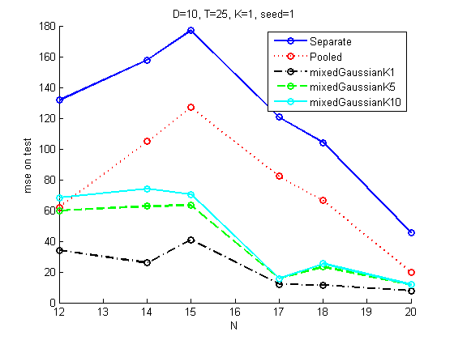
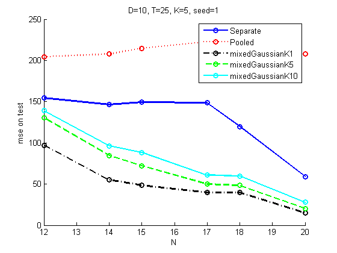
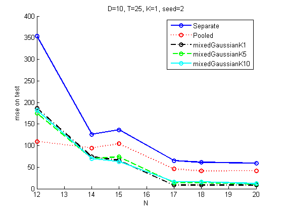
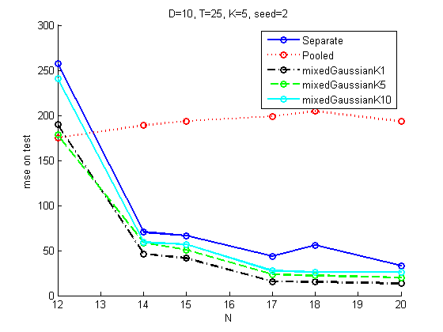

Contents
function linregMultitaskGmmPriorDemo()
close all
seeds = [1 2];
plotFns = false;
for seedi=1:length(seeds)
seed = seeds(seedi);
Generate training data
setSeed(seed);
Ds = [10];
for Di=1:length(Ds)
D = Ds(Di);
if D==1
Ntrain = 20;
else
Ntrain = round(2*D);
end
Ntest = 100*D;
Xtrain = randn(Ntrain, D);
if D==1
Xtest = linspace(min(Xtrain), max(Xtrain), 100)';
T = 5;
else
Xtest = randn(Ntest, D);
T = 25;
end
Ks = [1 5];
for Ki=1:length(Ks)
K = Ks(Ki);
mu = 5*randn(D,K);
Sigma = repmat(0.01*randpd(D), [1 1 K]);
mixweight = normalize(ones(1,K));
[W, z]= mixGaussSample(struct('mu', mu, 'Sigma', Sigma, 'mixweight', mixweight), T);
W = W';
w0 = 5*randn(1,T);
ytrain = zeros(Ntrain, T);
ytest = zeros(Ntest, T);
ftest = zeros(Ntest, T);
sigma2 = 5*ones(1,T);
Xtrain1 = [ones(Ntrain,1) Xtrain];
Xtest1 = [ones(Ntest,1) Xtest];
for t=1:T
w = [w0(t); W(:,t)];
ytrain(:,t) = Xtrain1*w + sigma2(t)*randn(Ntrain,1);
ftest(:,t) = Xtest1*w;
ytest(:,t) = ftest(:,t) + sigma2(t)*randn(Ntest,1);
end
Plot truth (if 1D)
[styles, colors, symbols] = plotColors;
if D==1 && seedi==1 && plotFns
figure; hold on;
for t=1:T
plot(Xtest, ftest(:,t), sprintf('%s%s', colors(t), styles{t}), 'linewidth', 2);
end
title('true functions');
printPmtkFigure(sprintf('multitaskRegTruthD%dK%d', D, K))
end
Fit models to different subsets of training data
if D==1
Ns = [3 6 9 12 15];
else
Ns = round(linspace(round(1.2*D), Ntrain, 6));
end
Nns = length(Ns);
methodStr = {'Separate', 'Pooled', 'mixedGaussianK1', 'mixedGaussianK5',...
'mixedGaussianK10'};
Nmethods = length(methodStr);
ypred = zeros(Ntest, T, Nns, Nmethods);
mse = zeros(T, Nns, Nmethods);
for ni=1:Nns
N = Ns(ni);
for method=1:Nmethods
modelEst = fitModels(Xtrain(1:N,:), ytrain(1:N,:), method);
for t=1:T
ypred(:,t,ni, method) = linregPredict(modelEst{t}, Xtest);
mse(t, ni, method) = mean( (ypred(:,t,ni, method) - ftest(:,t)).^2 );
end
end
end
if any(isnan(mse(:))), keyboard, end
maxIter =
20
Warning: Could not find an exact
(case-sensitive) match for 'gaussLogProb'.
C:\pmtk3\toolbox\The_multivariate_Gaussian\gaussLogprob.m
is a case-insensitive match and will be used
instead.
You can improve the performance of your code
by using exact
name matches and we therefore recommend that
you update your
usage accordingly. Alternatively, you can
disable this warning using
warning('off','MATLAB:dispatcher:InexactCaseMatch').
This warning will become an error in future
releases.
Iteration 18: Log likelihood decreased to -36.76003 from -36.75980
Iteration 19: Log likelihood decreased to -36.76074 from -36.76003
Iteration 20: Log likelihood decreased to -36.76185 from -36.76074
Iteration 21: Log likelihood decreased to -36.76331 from -36.76185
Iteration 22: Log likelihood decreased to -36.76507 from -36.76331
Iteration 23: Log likelihood decreased to -36.76707 from -36.76507
Iteration 24: Log likelihood decreased to -36.76926 from -36.76707
Iteration 25: Log likelihood decreased to -36.77162 from -36.76926
Iteration 26: Log likelihood decreased to -36.77410 from -36.77162
Iteration 27: Log likelihood decreased to -36.77668 from -36.77410
Iteration 28: Log likelihood decreased to -36.77932 from -36.77668
Iteration 29: Log likelihood decreased to -36.78202 from -36.77932
Iteration 30: Log likelihood decreased to -36.78476 from -36.78202
Iteration 31: Log likelihood decreased to -36.78751 from -36.78476
Iteration 32: Log likelihood decreased to -36.79028 from -36.78751
Iteration 33: Log likelihood decreased to -36.79306 from -36.79028
Iteration 34: Log likelihood decreased to -36.79582 from -36.79306
Iteration 35: Log likelihood decreased to -36.79858 from -36.79582
Iteration 36: Log likelihood decreased to -36.80132 from -36.79858
Iteration 37: Log likelihood decreased to -36.80404 from -36.80132
Iteration 38: Log likelihood decreased to -36.80672 from -36.80404
Iteration 39: Log likelihood decreased to -36.80938 from -36.80672
Iteration 40: Log likelihood decreased to -36.81199 from -36.80938
Iteration 41: Log likelihood decreased to -36.81456 from -36.81199
Iteration 42: Log likelihood decreased to -36.81708 from -36.81456
Iteration 43: Log likelihood decreased to -36.81955 from -36.81708
Iteration 44: Log likelihood decreased to -36.82197 from -36.81955
Iteration 45: Log likelihood decreased to -36.82433 from -36.82197
Iteration 46: Log likelihood decreased to -36.82664 from -36.82433
Iteration 47: Log likelihood decreased to -36.82889 from -36.82664
Iteration 48: Log likelihood decreased to -36.83108 from -36.82889
Iteration 49: Log likelihood decreased to -36.83321 from -36.83108
Iteration 50: Log likelihood decreased to -36.83529 from -36.83321
Iteration 51: Log likelihood decreased to -36.83731 from -36.83529
Iteration 52: Log likelihood decreased to -36.83928 from -36.83731
Iteration 53: Log likelihood decreased to -36.84119 from -36.83928
Iteration 54: Log likelihood decreased to -36.84305 from -36.84119
Iteration 55: Log likelihood decreased to -36.84486 from -36.84305
Iteration 56: Log likelihood decreased to -36.84662 from -36.84486
Iteration 57: Log likelihood decreased to -36.84834 from -36.84662
Iteration 58: Log likelihood decreased to -36.85001 from -36.84834
Iteration 59: Log likelihood decreased to -36.85163 from -36.85001
Iteration 60: Log likelihood decreased to -36.85321 from -36.85163
Iteration 61: Log likelihood decreased to -36.85475 from -36.85321
Iteration 62: Log likelihood decreased to -36.85625 from -36.85475
Iteration 63: Log likelihood decreased to -36.85771 from -36.85625
Iteration 64: Log likelihood decreased to -36.85914 from -36.85771
Iteration 65: Log likelihood decreased to -36.86052 from -36.85914
Iteration 66: Log likelihood decreased to -36.86188 from -36.86052
Iteration 67: Log likelihood decreased to -36.86320 from -36.86188
Iteration 68: Log likelihood decreased to -36.86448 from -36.86320
Iteration 69: Log likelihood decreased to -36.86574 from -36.86448
Iteration 70: Log likelihood decreased to -36.86697 from -36.86574
Iteration 71: Log likelihood decreased to -36.86816 from -36.86697
Iteration 72: Log likelihood decreased to -36.86933 from -36.86816
Iteration 73: Log likelihood decreased to -36.87047 from -36.86933
Iteration 74: Log likelihood decreased to -36.87159 from -36.87047
Iteration 75: Log likelihood decreased to -36.87268 from -36.87159
Iteration 76: Log likelihood decreased to -36.87375 from -36.87268
Iteration 77: Log likelihood decreased to -36.87479 from -36.87375
Iteration 78: Log likelihood decreased to -36.87581 from -36.87479
Iteration 79: Log likelihood decreased to -36.87680 from -36.87581
Iteration 80: Log likelihood decreased to -36.87778 from -36.87680
Iteration 81: Log likelihood decreased to -36.87873 from -36.87778
Iteration 82: Log likelihood decreased to -36.87966 from -36.87873
Iteration 83: Log likelihood decreased to -36.88058 from -36.87966
Iteration 84: Log likelihood decreased to -36.88147 from -36.88058
Iteration 85: Log likelihood decreased to -36.88234 from -36.88147
Iteration 86: Log likelihood decreased to -36.88320 from -36.88234
Iteration 87: Log likelihood decreased to -36.88404 from -36.88320
Iteration 88: Log likelihood decreased to -36.88485 from -36.88404
Iteration 89: Log likelihood decreased to -36.88565 from -36.88485
Iteration 90: Log likelihood decreased to -36.88644 from -36.88565
Iteration 91: Log likelihood decreased to -36.88720 from -36.88644
Iteration 92: Log likelihood decreased to -36.88795 from -36.88720
Iteration 93: Log likelihood decreased to -36.88867 from -36.88795
Iteration 94: Log likelihood decreased to -36.88938 from -36.88867
Iteration 95: Log likelihood decreased to -36.89007 from -36.88938
Iteration 96: Log likelihood decreased to -36.89074 from -36.89007
Iteration 97: Log likelihood decreased to -36.89140 from -36.89074
Iteration 98: Log likelihood decreased to -36.89203 from -36.89140
Iteration 99: Log likelihood decreased to -36.89264 from -36.89203
Iteration 100: Log likelihood decreased to -36.89323 from -36.89264
maxIter =
20
maxIter =
20
maxIter =
20
maxIter =
20
maxIter =
20
Iteration 70: Log likelihood decreased to -37.85906 from -37.85812
Iteration 71: Log likelihood decreased to -37.86154 from -37.85906
Iteration 72: Log likelihood decreased to -37.86624 from -37.86154
Iteration 73: Log likelihood decreased to -37.87446 from -37.86624
Iteration 74: Log likelihood decreased to -37.88821 from -37.87446
Iteration 75: Log likelihood decreased to -37.90982 from -37.88821
Iteration 76: Log likelihood decreased to -37.93956 from -37.90982
Iteration 77: Log likelihood decreased to -37.97244 from -37.93956
Iteration 78: Log likelihood decreased to -38.00121 from -37.97244
Iteration 79: Log likelihood decreased to -38.02258 from -38.00121
Iteration 80: Log likelihood decreased to -38.03669 from -38.02258
Iteration 81: Log likelihood decreased to -38.04286 from -38.03669
Iteration 87: Log likelihood decreased to -37.93849 from -37.93545
Iteration 88: Log likelihood decreased to -37.94303 from -37.93849
Iteration 89: Log likelihood decreased to -37.94855 from -37.94303
Iteration 90: Log likelihood decreased to -37.95498 from -37.94855
Iteration 91: Log likelihood decreased to -37.96238 from -37.95498
Iteration 92: Log likelihood decreased to -37.97088 from -37.96238
Iteration 93: Log likelihood decreased to -37.98070 from -37.97088
Iteration 94: Log likelihood decreased to -37.99217 from -37.98070
Iteration 95: Log likelihood decreased to -38.00568 from -37.99217
Iteration 96: Log likelihood decreased to -38.02141 from -38.00568
Iteration 97: Log likelihood decreased to -38.03808 from -38.02141
Iteration 98: Log likelihood decreased to -38.05045 from -38.03808
Iteration 99: Log likelihood decreased to -38.05129 from -38.05045
maxIter =
20
Iteration 17: Log likelihood decreased to -45.52468 from -45.52359
Iteration 18: Log likelihood decreased to -45.52744 from -45.52468
Iteration 19: Log likelihood decreased to -45.53156 from -45.52744
Iteration 20: Log likelihood decreased to -45.53678 from -45.53156
Iteration 21: Log likelihood decreased to -45.54296 from -45.53678
Iteration 22: Log likelihood decreased to -45.54994 from -45.54296
Iteration 23: Log likelihood decreased to -45.55763 from -45.54994
Iteration 24: Log likelihood decreased to -45.56594 from -45.55763
Iteration 25: Log likelihood decreased to -45.57480 from -45.56594
Iteration 26: Log likelihood decreased to -45.58415 from -45.57480
Iteration 27: Log likelihood decreased to -45.59394 from -45.58415
Iteration 28: Log likelihood decreased to -45.60413 from -45.59394
Iteration 29: Log likelihood decreased to -45.61467 from -45.60413
Iteration 30: Log likelihood decreased to -45.62551 from -45.61467
Iteration 31: Log likelihood decreased to -45.63663 from -45.62551
Iteration 32: Log likelihood decreased to -45.64799 from -45.63663
Iteration 33: Log likelihood decreased to -45.65955 from -45.64799
Iteration 34: Log likelihood decreased to -45.67128 from -45.65955
Iteration 35: Log likelihood decreased to -45.68315 from -45.67128
Iteration 36: Log likelihood decreased to -45.69512 from -45.68315
Iteration 37: Log likelihood decreased to -45.70718 from -45.69512
Iteration 38: Log likelihood decreased to -45.71928 from -45.70718
Iteration 39: Log likelihood decreased to -45.73141 from -45.71928
Iteration 40: Log likelihood decreased to -45.74353 from -45.73141
Iteration 41: Log likelihood decreased to -45.75562 from -45.74353
Iteration 42: Log likelihood decreased to -45.76767 from -45.75562
Iteration 43: Log likelihood decreased to -45.77964 from -45.76767
Iteration 44: Log likelihood decreased to -45.79151 from -45.77964
Iteration 45: Log likelihood decreased to -45.80328 from -45.79151
Iteration 46: Log likelihood decreased to -45.81491 from -45.80328
Iteration 47: Log likelihood decreased to -45.82640 from -45.81491
Iteration 48: Log likelihood decreased to -45.83773 from -45.82640
Iteration 49: Log likelihood decreased to -45.84888 from -45.83773
Iteration 50: Log likelihood decreased to -45.85986 from -45.84888
Iteration 51: Log likelihood decreased to -45.87064 from -45.85986
Iteration 52: Log likelihood decreased to -45.88123 from -45.87064
Iteration 53: Log likelihood decreased to -45.89161 from -45.88123
Iteration 54: Log likelihood decreased to -45.90178 from -45.89161
Iteration 55: Log likelihood decreased to -45.91174 from -45.90178
Iteration 56: Log likelihood decreased to -45.92148 from -45.91174
Iteration 57: Log likelihood decreased to -45.93100 from -45.92148
Iteration 58: Log likelihood decreased to -45.94031 from -45.93100
Iteration 59: Log likelihood decreased to -45.94939 from -45.94031
Iteration 60: Log likelihood decreased to -45.95826 from -45.94939
Iteration 61: Log likelihood decreased to -45.96691 from -45.95826
Iteration 62: Log likelihood decreased to -45.97534 from -45.96691
Iteration 63: Log likelihood decreased to -45.98357 from -45.97534
Iteration 64: Log likelihood decreased to -45.99158 from -45.98357
Iteration 65: Log likelihood decreased to -45.99938 from -45.99158
Iteration 66: Log likelihood decreased to -46.00699 from -45.99938
Iteration 67: Log likelihood decreased to -46.01439 from -46.00699
Iteration 68: Log likelihood decreased to -46.02159 from -46.01439
Iteration 69: Log likelihood decreased to -46.02861 from -46.02159
Iteration 70: Log likelihood decreased to -46.03543 from -46.02861
Iteration 71: Log likelihood decreased to -46.04208 from -46.03543
Iteration 72: Log likelihood decreased to -46.04854 from -46.04208
Iteration 73: Log likelihood decreased to -46.05483 from -46.04854
Iteration 74: Log likelihood decreased to -46.06094 from -46.05483
Iteration 75: Log likelihood decreased to -46.06689 from -46.06094
Iteration 76: Log likelihood decreased to -46.07268 from -46.06689
Iteration 77: Log likelihood decreased to -46.07831 from -46.07268
Iteration 78: Log likelihood decreased to -46.08379 from -46.07831
Iteration 79: Log likelihood decreased to -46.08911 from -46.08379
Iteration 80: Log likelihood decreased to -46.09430 from -46.08911
Iteration 81: Log likelihood decreased to -46.09934 from -46.09430
Iteration 82: Log likelihood decreased to -46.10424 from -46.09934
Iteration 83: Log likelihood decreased to -46.10901 from -46.10424
Iteration 84: Log likelihood decreased to -46.11365 from -46.10901
Iteration 85: Log likelihood decreased to -46.11817 from -46.11365
Iteration 86: Log likelihood decreased to -46.12257 from -46.11817
Iteration 87: Log likelihood decreased to -46.12684 from -46.12257
Iteration 88: Log likelihood decreased to -46.13101 from -46.12684
Iteration 89: Log likelihood decreased to -46.13506 from -46.13101
Iteration 90: Log likelihood decreased to -46.13901 from -46.13506
Iteration 91: Log likelihood decreased to -46.14285 from -46.13901
Iteration 92: Log likelihood decreased to -46.14659 from -46.14285
Iteration 93: Log likelihood decreased to -46.15023 from -46.14659
Iteration 94: Log likelihood decreased to -46.15378 from -46.15023
Iteration 95: Log likelihood decreased to -46.15724 from -46.15378
Iteration 96: Log likelihood decreased to -46.16061 from -46.15724
Iteration 97: Log likelihood decreased to -46.16389 from -46.16061
Iteration 98: Log likelihood decreased to -46.16709 from -46.16389
Iteration 99: Log likelihood decreased to -46.17020 from -46.16709
Iteration 100: Log likelihood decreased to -46.17324 from -46.17020
maxIter =
20
Iteration 42: Log likelihood decreased to -42.95275 from -42.94247
Iteration 43: Log likelihood decreased to -42.96635 from -42.95275
maxIter =
20
maxIter =
20
maxIter =
20
Iteration 30: Log likelihood decreased to -51.04988 from -51.04328
Iteration 31: Log likelihood decreased to -51.06065 from -51.04988
Iteration 32: Log likelihood decreased to -51.07140 from -51.06065
Iteration 33: Log likelihood decreased to -51.08096 from -51.07140
Iteration 34: Log likelihood decreased to -51.08909 from -51.08096
Iteration 35: Log likelihood decreased to -51.09589 from -51.08909
Iteration 36: Log likelihood decreased to -51.10150 from -51.09589
Iteration 37: Log likelihood decreased to -51.10604 from -51.10150
Iteration 38: Log likelihood decreased to -51.10963 from -51.10604
Iteration 39: Log likelihood decreased to -51.11230 from -51.10963
Iteration 40: Log likelihood decreased to -51.11403 from -51.11230
Iteration 41: Log likelihood decreased to -51.11470 from -51.11403
maxIter =
20
Iteration 28: Log likelihood decreased to -50.97486 from -50.96342
Iteration 29: Log likelihood decreased to -50.99895 from -50.97486
Iteration 30: Log likelihood decreased to -51.02302 from -50.99895
Iteration 31: Log likelihood decreased to -51.04358 from -51.02302
Iteration 32: Log likelihood decreased to -51.06030 from -51.04358
Iteration 33: Log likelihood decreased to -51.07368 from -51.06030
Iteration 34: Log likelihood decreased to -51.08439 from -51.07368
Iteration 35: Log likelihood decreased to -51.09297 from -51.08439
Iteration 36: Log likelihood decreased to -51.09981 from -51.09297
Iteration 37: Log likelihood decreased to -51.10516 from -51.09981
Iteration 38: Log likelihood decreased to -51.10909 from -51.10516
Iteration 39: Log likelihood decreased to -51.11133 from -51.10909
Iteration 57: Log likelihood decreased to -50.88260 from -50.88197
Iteration 58: Log likelihood decreased to -50.88327 from -50.88260
Iteration 59: Log likelihood decreased to -50.88341 from -50.88327
maxIter =
20
maxIter =
20
Iteration 28: Log likelihood decreased to -53.93812 from -53.93456
Iteration 29: Log likelihood decreased to -53.94458 from -53.93812
Iteration 30: Log likelihood decreased to -53.95027 from -53.94458
Iteration 31: Log likelihood decreased to -53.95382 from -53.95027
Iteration 32: Log likelihood decreased to -53.95466 from -53.95382
Iteration 89: Log likelihood decreased to -53.18675 from -53.18656
Iteration 90: Log likelihood decreased to -53.18867 from -53.18675
Iteration 91: Log likelihood decreased to -53.19214 from -53.18867
Iteration 92: Log likelihood decreased to -53.19692 from -53.19214
Iteration 93: Log likelihood decreased to -53.20279 from -53.19692
Iteration 94: Log likelihood decreased to -53.20948 from -53.20279
Iteration 95: Log likelihood decreased to -53.21637 from -53.20948
Iteration 96: Log likelihood decreased to -53.22062 from -53.21637
maxIter =
20
Iteration 25: Log likelihood decreased to -53.84940 from -53.82803
Iteration 26: Log likelihood decreased to -53.87632 from -53.84940
Iteration 27: Log likelihood decreased to -53.90075 from -53.87632
Iteration 28: Log likelihood decreased to -53.92043 from -53.90075
Iteration 29: Log likelihood decreased to -53.93562 from -53.92043
Iteration 30: Log likelihood decreased to -53.94710 from -53.93562
Iteration 31: Log likelihood decreased to -53.95546 from -53.94710
Iteration 32: Log likelihood decreased to -53.96082 from -53.95546
Iteration 33: Log likelihood decreased to -53.96273 from -53.96082
maxIter =
20
maxIter =
20
maxIter =
20
Iteration 32: Log likelihood decreased to -60.17338 from -60.17034
Iteration 33: Log likelihood decreased to -60.18889 from -60.17338
Iteration 34: Log likelihood decreased to -60.20208 from -60.18889
Iteration 35: Log likelihood decreased to -60.21001 from -60.20208
Iteration 36: Log likelihood decreased to -60.21403 from -60.21001
Iteration 37: Log likelihood decreased to -60.21777 from -60.21403
Iteration 38: Log likelihood decreased to -60.22251 from -60.21777
Iteration 39: Log likelihood decreased to -60.22730 from -60.22251
Iteration 40: Log likelihood decreased to -60.23129 from -60.22730
Iteration 41: Log likelihood decreased to -60.23419 from -60.23129
Iteration 42: Log likelihood decreased to -60.23592 from -60.23419
Iteration 43: Log likelihood decreased to -60.23646 from -60.23592
maxIter =
20
Iteration 12: Log likelihood decreased to -46.85133 from -46.85119
Iteration 13: Log likelihood decreased to -46.85169 from -46.85133
Iteration 14: Log likelihood decreased to -46.85218 from -46.85169
Iteration 15: Log likelihood decreased to -46.85274 from -46.85218
Iteration 16: Log likelihood decreased to -46.85334 from -46.85274
Iteration 17: Log likelihood decreased to -46.85396 from -46.85334
Iteration 18: Log likelihood decreased to -46.85461 from -46.85396
Iteration 19: Log likelihood decreased to -46.85527 from -46.85461
Iteration 20: Log likelihood decreased to -46.85594 from -46.85527
Iteration 21: Log likelihood decreased to -46.85662 from -46.85594
Iteration 22: Log likelihood decreased to -46.85732 from -46.85662
Iteration 23: Log likelihood decreased to -46.85802 from -46.85732
Iteration 24: Log likelihood decreased to -46.85872 from -46.85802
Iteration 25: Log likelihood decreased to -46.85942 from -46.85872
Iteration 26: Log likelihood decreased to -46.86011 from -46.85942
Iteration 27: Log likelihood decreased to -46.86078 from -46.86011
Iteration 28: Log likelihood decreased to -46.86143 from -46.86078
Iteration 29: Log likelihood decreased to -46.86205 from -46.86143
Iteration 30: Log likelihood decreased to -46.86264 from -46.86205
Iteration 31: Log likelihood decreased to -46.86319 from -46.86264
Iteration 32: Log likelihood decreased to -46.86370 from -46.86319
Iteration 33: Log likelihood decreased to -46.86418 from -46.86370
Iteration 34: Log likelihood decreased to -46.86462 from -46.86418
Iteration 35: Log likelihood decreased to -46.86504 from -46.86462
Iteration 36: Log likelihood decreased to -46.86542 from -46.86504
Iteration 37: Log likelihood decreased to -46.86578 from -46.86542
Iteration 38: Log likelihood decreased to -46.86611 from -46.86578
Iteration 39: Log likelihood decreased to -46.86642 from -46.86611
Iteration 40: Log likelihood decreased to -46.86671 from -46.86642
Iteration 41: Log likelihood decreased to -46.86698 from -46.86671
Iteration 42: Log likelihood decreased to -46.86723 from -46.86698
Iteration 43: Log likelihood decreased to -46.86747 from -46.86723
Iteration 44: Log likelihood decreased to -46.86769 from -46.86747
Iteration 45: Log likelihood decreased to -46.86790 from -46.86769
Iteration 46: Log likelihood decreased to -46.86809 from -46.86790
Iteration 47: Log likelihood decreased to -46.86827 from -46.86809
Iteration 48: Log likelihood decreased to -46.86845 from -46.86827
Iteration 49: Log likelihood decreased to -46.86861 from -46.86845
Iteration 50: Log likelihood decreased to -46.86876 from -46.86861
Iteration 51: Log likelihood decreased to -46.86890 from -46.86876
Iteration 52: Log likelihood decreased to -46.86903 from -46.86890
Iteration 53: Log likelihood decreased to -46.86915 from -46.86903
Iteration 54: Log likelihood decreased to -46.86927 from -46.86915
Iteration 55: Log likelihood decreased to -46.86938 from -46.86927
Iteration 56: Log likelihood decreased to -46.86948 from -46.86938
maxIter =
20
Iteration 21: Log likelihood decreased to -38.20825 from -38.20759
Iteration 22: Log likelihood decreased to -38.20982 from -38.20825
Iteration 23: Log likelihood decreased to -38.21214 from -38.20982
Iteration 24: Log likelihood decreased to -38.21515 from -38.21214
Iteration 25: Log likelihood decreased to -38.21885 from -38.21515
Iteration 26: Log likelihood decreased to -38.22334 from -38.21885
Iteration 27: Log likelihood decreased to -38.22880 from -38.22334
Iteration 28: Log likelihood decreased to -38.23558 from -38.22880
Iteration 29: Log likelihood decreased to -38.24412 from -38.23558
Iteration 30: Log likelihood decreased to -38.25502 from -38.24412
Iteration 31: Log likelihood decreased to -38.26885 from -38.25502
Iteration 32: Log likelihood decreased to -38.28600 from -38.26885
Iteration 33: Log likelihood decreased to -38.30649 from -38.28600
Iteration 34: Log likelihood decreased to -38.32983 from -38.30649
Iteration 35: Log likelihood decreased to -38.35514 from -38.32983
Iteration 36: Log likelihood decreased to -38.38131 from -38.35514
Iteration 37: Log likelihood decreased to -38.40727 from -38.38131
Iteration 38: Log likelihood decreased to -38.43215 from -38.40727
Iteration 39: Log likelihood decreased to -38.45533 from -38.43215
Iteration 40: Log likelihood decreased to -38.47650 from -38.45533
Iteration 41: Log likelihood decreased to -38.49556 from -38.47650
Iteration 42: Log likelihood decreased to -38.51255 from -38.49556
Iteration 43: Log likelihood decreased to -38.52759 from -38.51255
Iteration 44: Log likelihood decreased to -38.54085 from -38.52759
Iteration 45: Log likelihood decreased to -38.55251 from -38.54085
Iteration 46: Log likelihood decreased to -38.56275 from -38.55251
Iteration 47: Log likelihood decreased to -38.57176 from -38.56275
Iteration 48: Log likelihood decreased to -38.57969 from -38.57176
Iteration 49: Log likelihood decreased to -38.58670 from -38.57969
Iteration 50: Log likelihood decreased to -38.59294 from -38.58670
Iteration 51: Log likelihood decreased to -38.59851 from -38.59294
Iteration 52: Log likelihood decreased to -38.60353 from -38.59851
Iteration 53: Log likelihood decreased to -38.60808 from -38.60353
Iteration 54: Log likelihood decreased to -38.61223 from -38.60808
Iteration 55: Log likelihood decreased to -38.61604 from -38.61223
Iteration 56: Log likelihood decreased to -38.61956 from -38.61604
Iteration 57: Log likelihood decreased to -38.62282 from -38.61956
Iteration 58: Log likelihood decreased to -38.62584 from -38.62282
Iteration 59: Log likelihood decreased to -38.62865 from -38.62584
Iteration 60: Log likelihood decreased to -38.63128 from -38.62865
Iteration 61: Log likelihood decreased to -38.63372 from -38.63128
Iteration 62: Log likelihood decreased to -38.63600 from -38.63372
Iteration 63: Log likelihood decreased to -38.63812 from -38.63600
Iteration 64: Log likelihood decreased to -38.64009 from -38.63812
Iteration 65: Log likelihood decreased to -38.64192 from -38.64009
Iteration 66: Log likelihood decreased to -38.64362 from -38.64192
Iteration 67: Log likelihood decreased to -38.64521 from -38.64362
Iteration 68: Log likelihood decreased to -38.64668 from -38.64521
Iteration 69: Log likelihood decreased to -38.64804 from -38.64668
Iteration 70: Log likelihood decreased to -38.64931 from -38.64804
Iteration 71: Log likelihood decreased to -38.65049 from -38.64931
Iteration 72: Log likelihood decreased to -38.65158 from -38.65049
Iteration 73: Log likelihood decreased to -38.65261 from -38.65158
Iteration 74: Log likelihood decreased to -38.65357 from -38.65261
Iteration 75: Log likelihood decreased to -38.65447 from -38.65357
Iteration 76: Log likelihood decreased to -38.65532 from -38.65447
Iteration 77: Log likelihood decreased to -38.65612 from -38.65532
Iteration 78: Log likelihood decreased to -38.65687 from -38.65612
Iteration 79: Log likelihood decreased to -38.65760 from -38.65687
Iteration 80: Log likelihood decreased to -38.65828 from -38.65760
Iteration 81: Log likelihood decreased to -38.65894 from -38.65828
Iteration 82: Log likelihood decreased to -38.65957 from -38.65894
Iteration 83: Log likelihood decreased to -38.66017 from -38.65957
Iteration 84: Log likelihood decreased to -38.66075 from -38.66017
Iteration 85: Log likelihood decreased to -38.66130 from -38.66075
Iteration 86: Log likelihood decreased to -38.66183 from -38.66130
Iteration 87: Log likelihood decreased to -38.66234 from -38.66183
Iteration 88: Log likelihood decreased to -38.66282 from -38.66234
Iteration 89: Log likelihood decreased to -38.66327 from -38.66282
Iteration 90: Log likelihood decreased to -38.66369 from -38.66327
Iteration 91: Log likelihood decreased to -38.66409 from -38.66369
Iteration 92: Log likelihood decreased to -38.66445 from -38.66409
Iteration 93: Log likelihood decreased to -38.66479 from -38.66445
Iteration 94: Log likelihood decreased to -38.66509 from -38.66479
Iteration 95: Log likelihood decreased to -38.66537 from -38.66509
Iteration 96: Log likelihood decreased to -38.66561 from -38.66537
Iteration 97: Log likelihood decreased to -38.66583 from -38.66561
Iteration 98: Log likelihood decreased to -38.66602 from -38.66583
Iteration 99: Log likelihood decreased to -38.66618 from -38.66602
Iteration 100: Log likelihood decreased to -38.66632 from -38.66618
maxIter =
20
maxIter =
20
Iteration 8: Log likelihood decreased to -56.11541 from -56.11141
Iteration 9: Log likelihood decreased to -56.12515 from -56.11541
Iteration 10: Log likelihood decreased to -56.13627 from -56.12515
Iteration 11: Log likelihood decreased to -56.14697 from -56.13627
Iteration 12: Log likelihood decreased to -56.15660 from -56.14697
Iteration 13: Log likelihood decreased to -56.16503 from -56.15660
Iteration 14: Log likelihood decreased to -56.17237 from -56.16503
Iteration 15: Log likelihood decreased to -56.17877 from -56.17237
Iteration 16: Log likelihood decreased to -56.18440 from -56.17877
Iteration 17: Log likelihood decreased to -56.18941 from -56.18440
Iteration 18: Log likelihood decreased to -56.19389 from -56.18941
Iteration 19: Log likelihood decreased to -56.19795 from -56.19389
Iteration 20: Log likelihood decreased to -56.20164 from -56.19795
Iteration 21: Log likelihood decreased to -56.20504 from -56.20164
Iteration 22: Log likelihood decreased to -56.20817 from -56.20504
Iteration 23: Log likelihood decreased to -56.21108 from -56.20817
Iteration 24: Log likelihood decreased to -56.21378 from -56.21108
Iteration 25: Log likelihood decreased to -56.21631 from -56.21378
Iteration 26: Log likelihood decreased to -56.21868 from -56.21631
Iteration 27: Log likelihood decreased to -56.22090 from -56.21868
Iteration 28: Log likelihood decreased to -56.22299 from -56.22090
Iteration 29: Log likelihood decreased to -56.22496 from -56.22299
Iteration 30: Log likelihood decreased to -56.22683 from -56.22496
Iteration 31: Log likelihood decreased to -56.22859 from -56.22683
Iteration 32: Log likelihood decreased to -56.23026 from -56.22859
Iteration 33: Log likelihood decreased to -56.23184 from -56.23026
Iteration 34: Log likelihood decreased to -56.23334 from -56.23184
Iteration 35: Log likelihood decreased to -56.23477 from -56.23334
Iteration 36: Log likelihood decreased to -56.23613 from -56.23477
Iteration 37: Log likelihood decreased to -56.23742 from -56.23613
Iteration 38: Log likelihood decreased to -56.23866 from -56.23742
Iteration 39: Log likelihood decreased to -56.23984 from -56.23866
Iteration 40: Log likelihood decreased to -56.24096 from -56.23984
Iteration 41: Log likelihood decreased to -56.24204 from -56.24096
Iteration 42: Log likelihood decreased to -56.24307 from -56.24204
Iteration 43: Log likelihood decreased to -56.24406 from -56.24307
Iteration 44: Log likelihood decreased to -56.24500 from -56.24406
Iteration 45: Log likelihood decreased to -56.24591 from -56.24500
Iteration 46: Log likelihood decreased to -56.24679 from -56.24591
Iteration 47: Log likelihood decreased to -56.24762 from -56.24679
Iteration 48: Log likelihood decreased to -56.24843 from -56.24762
Iteration 49: Log likelihood decreased to -56.24921 from -56.24843
Iteration 50: Log likelihood decreased to -56.24996 from -56.24921
Iteration 51: Log likelihood decreased to -56.25068 from -56.24996
Iteration 52: Log likelihood decreased to -56.25138 from -56.25068
Iteration 53: Log likelihood decreased to -56.25206 from -56.25138
Iteration 54: Log likelihood decreased to -56.25271 from -56.25206
Iteration 55: Log likelihood decreased to -56.25334 from -56.25271
Iteration 56: Log likelihood decreased to -56.25395 from -56.25334
Iteration 57: Log likelihood decreased to -56.25455 from -56.25395
Iteration 58: Log likelihood decreased to -56.25512 from -56.25455
Iteration 59: Log likelihood decreased to -56.25568 from -56.25512
Iteration 60: Log likelihood decreased to -56.25622 from -56.25568
Iteration 61: Log likelihood decreased to -56.25674 from -56.25622
Iteration 62: Log likelihood decreased to -56.25725 from -56.25674
Iteration 63: Log likelihood decreased to -56.25775 from -56.25725
Iteration 64: Log likelihood decreased to -56.25823 from -56.25775
Iteration 65: Log likelihood decreased to -56.25870 from -56.25823
Iteration 66: Log likelihood decreased to -56.25916 from -56.25870
Iteration 67: Log likelihood decreased to -56.25961 from -56.25916
Iteration 68: Log likelihood decreased to -56.26004 from -56.25961
Iteration 69: Log likelihood decreased to -56.26047 from -56.26004
Iteration 70: Log likelihood decreased to -56.26088 from -56.26047
Iteration 71: Log likelihood decreased to -56.26129 from -56.26088
Iteration 72: Log likelihood decreased to -56.26168 from -56.26129
Iteration 73: Log likelihood decreased to -56.26207 from -56.26168
Iteration 74: Log likelihood decreased to -56.26245 from -56.26207
Iteration 75: Log likelihood decreased to -56.26282 from -56.26245
Iteration 76: Log likelihood decreased to -56.26318 from -56.26282
Iteration 77: Log likelihood decreased to -56.26353 from -56.26318
Iteration 78: Log likelihood decreased to -56.26388 from -56.26353
Iteration 79: Log likelihood decreased to -56.26422 from -56.26388
Iteration 80: Log likelihood decreased to -56.26455 from -56.26422
Iteration 81: Log likelihood decreased to -56.26487 from -56.26455
Iteration 82: Log likelihood decreased to -56.26519 from -56.26487
Iteration 83: Log likelihood decreased to -56.26551 from -56.26519
Iteration 84: Log likelihood decreased to -56.26581 from -56.26551
Iteration 85: Log likelihood decreased to -56.26611 from -56.26581
Iteration 86: Log likelihood decreased to -56.26641 from -56.26611
Iteration 87: Log likelihood decreased to -56.26670 from -56.26641
Iteration 88: Log likelihood decreased to -56.26698 from -56.26670
Iteration 89: Log likelihood decreased to -56.26726 from -56.26698
Iteration 90: Log likelihood decreased to -56.26754 from -56.26726
Iteration 91: Log likelihood decreased to -56.26781 from -56.26754
Iteration 92: Log likelihood decreased to -56.26808 from -56.26781
Iteration 93: Log likelihood decreased to -56.26834 from -56.26808
Iteration 94: Log likelihood decreased to -56.26859 from -56.26834
Iteration 95: Log likelihood decreased to -56.26885 from -56.26859
Iteration 96: Log likelihood decreased to -56.26909 from -56.26885
Iteration 97: Log likelihood decreased to -56.26934 from -56.26909
Iteration 98: Log likelihood decreased to -56.26958 from -56.26934
Iteration 99: Log likelihood decreased to -56.26982 from -56.26958
Iteration 100: Log likelihood decreased to -56.27005 from -56.26982
maxIter =
20
Iteration 19: Log likelihood decreased to -47.59863 from -47.59838
Iteration 20: Log likelihood decreased to -47.59982 from -47.59863
Iteration 21: Log likelihood decreased to -47.60152 from -47.59982
Iteration 22: Log likelihood decreased to -47.60349 from -47.60152
Iteration 23: Log likelihood decreased to -47.60559 from -47.60349
Iteration 24: Log likelihood decreased to -47.60774 from -47.60559
Iteration 25: Log likelihood decreased to -47.60989 from -47.60774
Iteration 26: Log likelihood decreased to -47.61200 from -47.60989
Iteration 27: Log likelihood decreased to -47.61406 from -47.61200
Iteration 28: Log likelihood decreased to -47.61606 from -47.61406
Iteration 29: Log likelihood decreased to -47.61799 from -47.61606
Iteration 30: Log likelihood decreased to -47.61985 from -47.61799
Iteration 31: Log likelihood decreased to -47.62164 from -47.61985
Iteration 32: Log likelihood decreased to -47.62336 from -47.62164
Iteration 33: Log likelihood decreased to -47.62501 from -47.62336
Iteration 34: Log likelihood decreased to -47.62660 from -47.62501
Iteration 35: Log likelihood decreased to -47.62813 from -47.62660
Iteration 36: Log likelihood decreased to -47.62959 from -47.62813
Iteration 37: Log likelihood decreased to -47.63100 from -47.62959
Iteration 38: Log likelihood decreased to -47.63236 from -47.63100
Iteration 39: Log likelihood decreased to -47.63366 from -47.63236
Iteration 40: Log likelihood decreased to -47.63491 from -47.63366
Iteration 41: Log likelihood decreased to -47.63612 from -47.63491
Iteration 42: Log likelihood decreased to -47.63729 from -47.63612
Iteration 43: Log likelihood decreased to -47.63841 from -47.63729
Iteration 44: Log likelihood decreased to -47.63949 from -47.63841
Iteration 45: Log likelihood decreased to -47.64053 from -47.63949
Iteration 46: Log likelihood decreased to -47.64154 from -47.64053
Iteration 47: Log likelihood decreased to -47.64251 from -47.64154
Iteration 48: Log likelihood decreased to -47.64345 from -47.64251
Iteration 49: Log likelihood decreased to -47.64436 from -47.64345
Iteration 50: Log likelihood decreased to -47.64524 from -47.64436
Iteration 51: Log likelihood decreased to -47.64609 from -47.64524
Iteration 52: Log likelihood decreased to -47.64692 from -47.64609
Iteration 53: Log likelihood decreased to -47.64772 from -47.64692
Iteration 54: Log likelihood decreased to -47.64849 from -47.64772
Iteration 55: Log likelihood decreased to -47.64924 from -47.64849
Iteration 56: Log likelihood decreased to -47.64997 from -47.64924
Iteration 57: Log likelihood decreased to -47.65068 from -47.64997
Iteration 58: Log likelihood decreased to -47.65136 from -47.65068
Iteration 59: Log likelihood decreased to -47.65203 from -47.65136
Iteration 60: Log likelihood decreased to -47.65267 from -47.65203
Iteration 61: Log likelihood decreased to -47.65330 from -47.65267
Iteration 62: Log likelihood decreased to -47.65391 from -47.65330
Iteration 63: Log likelihood decreased to -47.65451 from -47.65391
Iteration 64: Log likelihood decreased to -47.65509 from -47.65451
Iteration 65: Log likelihood decreased to -47.65565 from -47.65509
Iteration 66: Log likelihood decreased to -47.65620 from -47.65565
Iteration 67: Log likelihood decreased to -47.65673 from -47.65620
Iteration 68: Log likelihood decreased to -47.65725 from -47.65673
Iteration 69: Log likelihood decreased to -47.65776 from -47.65725
Iteration 70: Log likelihood decreased to -47.65826 from -47.65776
Iteration 71: Log likelihood decreased to -47.65874 from -47.65826
Iteration 72: Log likelihood decreased to -47.65921 from -47.65874
Iteration 73: Log likelihood decreased to -47.65967 from -47.65921
Iteration 74: Log likelihood decreased to -47.66012 from -47.65967
Iteration 75: Log likelihood decreased to -47.66056 from -47.66012
Iteration 76: Log likelihood decreased to -47.66099 from -47.66056
Iteration 77: Log likelihood decreased to -47.66141 from -47.66099
Iteration 78: Log likelihood decreased to -47.66183 from -47.66141
Iteration 79: Log likelihood decreased to -47.66223 from -47.66183
Iteration 80: Log likelihood decreased to -47.66263 from -47.66223
Iteration 81: Log likelihood decreased to -47.66301 from -47.66263
Iteration 82: Log likelihood decreased to -47.66339 from -47.66301
Iteration 83: Log likelihood decreased to -47.66377 from -47.66339
Iteration 84: Log likelihood decreased to -47.66413 from -47.66377
Iteration 85: Log likelihood decreased to -47.66449 from -47.66413
Iteration 86: Log likelihood decreased to -47.66485 from -47.66449
Iteration 87: Log likelihood decreased to -47.66519 from -47.66485
Iteration 88: Log likelihood decreased to -47.66553 from -47.66519
Iteration 89: Log likelihood decreased to -47.66587 from -47.66553
Iteration 90: Log likelihood decreased to -47.66620 from -47.66587
Iteration 91: Log likelihood decreased to -47.66653 from -47.66620
Iteration 92: Log likelihood decreased to -47.66685 from -47.66653
Iteration 93: Log likelihood decreased to -47.66716 from -47.66685
Iteration 94: Log likelihood decreased to -47.66747 from -47.66716
Iteration 95: Log likelihood decreased to -47.66778 from -47.66747
Iteration 96: Log likelihood decreased to -47.66808 from -47.66778
Iteration 97: Log likelihood decreased to -47.66838 from -47.66808
Iteration 98: Log likelihood decreased to -47.66868 from -47.66838
Iteration 99: Log likelihood decreased to -47.66897 from -47.66868
Iteration 100: Log likelihood decreased to -47.66925 from -47.66897
maxIter =
20
Iteration 17: Log likelihood decreased to -41.55428 from -41.55229
Iteration 18: Log likelihood decreased to -41.55530 from -41.55428
Iteration 19: Log likelihood decreased to -41.55547 from -41.55530
maxIter =
20
Iteration 8: Log likelihood decreased to -60.10163 from -60.09632
Iteration 9: Log likelihood decreased to -60.11205 from -60.10163
Iteration 10: Log likelihood decreased to -60.12282 from -60.11205
Iteration 11: Log likelihood decreased to -60.13239 from -60.12282
Iteration 12: Log likelihood decreased to -60.14048 from -60.13239
Iteration 13: Log likelihood decreased to -60.14720 from -60.14048
Iteration 14: Log likelihood decreased to -60.15281 from -60.14720
Iteration 15: Log likelihood decreased to -60.15753 from -60.15281
Iteration 16: Log likelihood decreased to -60.16156 from -60.15753
Iteration 17: Log likelihood decreased to -60.16504 from -60.16156
Iteration 18: Log likelihood decreased to -60.16809 from -60.16504
Iteration 19: Log likelihood decreased to -60.17079 from -60.16809
Iteration 20: Log likelihood decreased to -60.17320 from -60.17079
Iteration 21: Log likelihood decreased to -60.17536 from -60.17320
Iteration 22: Log likelihood decreased to -60.17733 from -60.17536
Iteration 23: Log likelihood decreased to -60.17912 from -60.17733
Iteration 24: Log likelihood decreased to -60.18075 from -60.17912
Iteration 25: Log likelihood decreased to -60.18226 from -60.18075
Iteration 26: Log likelihood decreased to -60.18365 from -60.18226
Iteration 27: Log likelihood decreased to -60.18494 from -60.18365
Iteration 28: Log likelihood decreased to -60.18614 from -60.18494
Iteration 29: Log likelihood decreased to -60.18726 from -60.18614
Iteration 30: Log likelihood decreased to -60.18831 from -60.18726
Iteration 31: Log likelihood decreased to -60.18929 from -60.18831
Iteration 32: Log likelihood decreased to -60.19022 from -60.18929
Iteration 33: Log likelihood decreased to -60.19109 from -60.19022
Iteration 34: Log likelihood decreased to -60.19192 from -60.19109
Iteration 35: Log likelihood decreased to -60.19270 from -60.19192
Iteration 36: Log likelihood decreased to -60.19344 from -60.19270
Iteration 37: Log likelihood decreased to -60.19414 from -60.19344
Iteration 38: Log likelihood decreased to -60.19481 from -60.19414
Iteration 39: Log likelihood decreased to -60.19545 from -60.19481
Iteration 40: Log likelihood decreased to -60.19607 from -60.19545
Iteration 41: Log likelihood decreased to -60.19665 from -60.19607
Iteration 42: Log likelihood decreased to -60.19721 from -60.19665
Iteration 43: Log likelihood decreased to -60.19775 from -60.19721
Iteration 44: Log likelihood decreased to -60.19827 from -60.19775
Iteration 45: Log likelihood decreased to -60.19877 from -60.19827
Iteration 46: Log likelihood decreased to -60.19925 from -60.19877
Iteration 47: Log likelihood decreased to -60.19971 from -60.19925
Iteration 48: Log likelihood decreased to -60.20016 from -60.19971
Iteration 49: Log likelihood decreased to -60.20059 from -60.20016
Iteration 50: Log likelihood decreased to -60.20101 from -60.20059
Iteration 51: Log likelihood decreased to -60.20142 from -60.20101
Iteration 52: Log likelihood decreased to -60.20181 from -60.20142
Iteration 53: Log likelihood decreased to -60.20219 from -60.20181
Iteration 54: Log likelihood decreased to -60.20256 from -60.20219
Iteration 55: Log likelihood decreased to -60.20291 from -60.20256
Iteration 56: Log likelihood decreased to -60.20326 from -60.20291
Iteration 57: Log likelihood decreased to -60.20360 from -60.20326
Iteration 58: Log likelihood decreased to -60.20393 from -60.20360
Iteration 59: Log likelihood decreased to -60.20425 from -60.20393
Iteration 60: Log likelihood decreased to -60.20456 from -60.20425
Iteration 61: Log likelihood decreased to -60.20487 from -60.20456
Iteration 62: Log likelihood decreased to -60.20516 from -60.20487
Iteration 63: Log likelihood decreased to -60.20545 from -60.20516
Iteration 64: Log likelihood decreased to -60.20573 from -60.20545
Iteration 65: Log likelihood decreased to -60.20601 from -60.20573
Iteration 66: Log likelihood decreased to -60.20628 from -60.20601
Iteration 67: Log likelihood decreased to -60.20654 from -60.20628
Iteration 68: Log likelihood decreased to -60.20680 from -60.20654
Iteration 69: Log likelihood decreased to -60.20705 from -60.20680
Iteration 70: Log likelihood decreased to -60.20730 from -60.20705
Iteration 71: Log likelihood decreased to -60.20754 from -60.20730
Iteration 72: Log likelihood decreased to -60.20777 from -60.20754
Iteration 73: Log likelihood decreased to -60.20800 from -60.20777
Iteration 74: Log likelihood decreased to -60.20823 from -60.20800
Iteration 75: Log likelihood decreased to -60.20845 from -60.20823
Iteration 76: Log likelihood decreased to -60.20867 from -60.20845
Iteration 77: Log likelihood decreased to -60.20888 from -60.20867
Iteration 78: Log likelihood decreased to -60.20909 from -60.20888
Iteration 79: Log likelihood decreased to -60.20929 from -60.20909
Iteration 80: Log likelihood decreased to -60.20949 from -60.20929
Iteration 81: Log likelihood decreased to -60.20969 from -60.20949
Iteration 82: Log likelihood decreased to -60.20988 from -60.20969
Iteration 83: Log likelihood decreased to -60.21007 from -60.20988
Iteration 84: Log likelihood decreased to -60.21026 from -60.21007
Iteration 85: Log likelihood decreased to -60.21044 from -60.21026
Iteration 86: Log likelihood decreased to -60.21062 from -60.21044
Iteration 87: Log likelihood decreased to -60.21080 from -60.21062
Iteration 88: Log likelihood decreased to -60.21097 from -60.21080
Iteration 89: Log likelihood decreased to -60.21114 from -60.21097
Iteration 90: Log likelihood decreased to -60.21131 from -60.21114
Iteration 91: Log likelihood decreased to -60.21148 from -60.21131
Iteration 92: Log likelihood decreased to -60.21164 from -60.21148
Iteration 93: Log likelihood decreased to -60.21180 from -60.21164
Iteration 94: Log likelihood decreased to -60.21196 from -60.21180
Iteration 95: Log likelihood decreased to -60.21211 from -60.21196
Iteration 96: Log likelihood decreased to -60.21227 from -60.21211
Iteration 97: Log likelihood decreased to -60.21242 from -60.21227
Iteration 98: Log likelihood decreased to -60.21257 from -60.21242
Iteration 99: Log likelihood decreased to -60.21271 from -60.21257
Iteration 100: Log likelihood decreased to -60.21286 from -60.21271
maxIter =
20
maxIter =
20
maxIter =
20
Iteration 8: Log likelihood decreased to -68.09950 from -68.09087
Iteration 9: Log likelihood decreased to -68.11696 from -68.09950
Iteration 10: Log likelihood decreased to -68.13501 from -68.11696
Iteration 11: Log likelihood decreased to -68.15126 from -68.13501
Iteration 12: Log likelihood decreased to -68.16524 from -68.15126
Iteration 13: Log likelihood decreased to -68.17714 from -68.16524
Iteration 14: Log likelihood decreased to -68.18725 from -68.17714
Iteration 15: Log likelihood decreased to -68.19591 from -68.18725
Iteration 16: Log likelihood decreased to -68.20339 from -68.19591
Iteration 17: Log likelihood decreased to -68.20989 from -68.20339
Iteration 18: Log likelihood decreased to -68.21560 from -68.20989
Iteration 19: Log likelihood decreased to -68.22065 from -68.21560
Iteration 20: Log likelihood decreased to -68.22514 from -68.22065
Iteration 21: Log likelihood decreased to -68.22918 from -68.22514
Iteration 22: Log likelihood decreased to -68.23281 from -68.22918
Iteration 23: Log likelihood decreased to -68.23611 from -68.23281
Iteration 24: Log likelihood decreased to -68.23911 from -68.23611
Iteration 25: Log likelihood decreased to -68.24186 from -68.23911
Iteration 26: Log likelihood decreased to -68.24439 from -68.24186
Iteration 27: Log likelihood decreased to -68.24672 from -68.24439
Iteration 28: Log likelihood decreased to -68.24887 from -68.24672
Iteration 29: Log likelihood decreased to -68.25087 from -68.24887
Iteration 30: Log likelihood decreased to -68.25273 from -68.25087
Iteration 31: Log likelihood decreased to -68.25447 from -68.25273
Iteration 32: Log likelihood decreased to -68.25609 from -68.25447
Iteration 33: Log likelihood decreased to -68.25761 from -68.25609
Iteration 34: Log likelihood decreased to -68.25904 from -68.25761
Iteration 35: Log likelihood decreased to -68.26039 from -68.25904
Iteration 36: Log likelihood decreased to -68.26166 from -68.26039
Iteration 37: Log likelihood decreased to -68.26285 from -68.26166
Iteration 38: Log likelihood decreased to -68.26399 from -68.26285
Iteration 39: Log likelihood decreased to -68.26506 from -68.26399
Iteration 40: Log likelihood decreased to -68.26608 from -68.26506
Iteration 41: Log likelihood decreased to -68.26705 from -68.26608
Iteration 42: Log likelihood decreased to -68.26797 from -68.26705
Iteration 43: Log likelihood decreased to -68.26884 from -68.26797
Iteration 44: Log likelihood decreased to -68.26968 from -68.26884
Iteration 45: Log likelihood decreased to -68.27048 from -68.26968
Iteration 46: Log likelihood decreased to -68.27124 from -68.27048
Iteration 47: Log likelihood decreased to -68.27197 from -68.27124
Iteration 48: Log likelihood decreased to -68.27266 from -68.27197
Iteration 49: Log likelihood decreased to -68.27333 from -68.27266
Iteration 50: Log likelihood decreased to -68.27397 from -68.27333
Iteration 51: Log likelihood decreased to -68.27459 from -68.27397
Iteration 52: Log likelihood decreased to -68.27518 from -68.27459
Iteration 53: Log likelihood decreased to -68.27575 from -68.27518
Iteration 54: Log likelihood decreased to -68.27629 from -68.27575
Iteration 55: Log likelihood decreased to -68.27682 from -68.27629
Iteration 56: Log likelihood decreased to -68.27732 from -68.27682
Iteration 57: Log likelihood decreased to -68.27781 from -68.27732
Iteration 58: Log likelihood decreased to -68.27828 from -68.27781
Iteration 59: Log likelihood decreased to -68.27874 from -68.27828
Iteration 60: Log likelihood decreased to -68.27918 from -68.27874
Iteration 61: Log likelihood decreased to -68.27960 from -68.27918
Iteration 62: Log likelihood decreased to -68.28001 from -68.27960
Iteration 63: Log likelihood decreased to -68.28041 from -68.28001
Iteration 64: Log likelihood decreased to -68.28080 from -68.28041
Iteration 65: Log likelihood decreased to -68.28117 from -68.28080
Iteration 66: Log likelihood decreased to -68.28153 from -68.28117
Iteration 67: Log likelihood decreased to -68.28188 from -68.28153
Iteration 68: Log likelihood decreased to -68.28222 from -68.28188
Iteration 69: Log likelihood decreased to -68.28255 from -68.28222
Iteration 70: Log likelihood decreased to -68.28287 from -68.28255
Iteration 71: Log likelihood decreased to -68.28318 from -68.28287
Iteration 72: Log likelihood decreased to -68.28348 from -68.28318
Iteration 73: Log likelihood decreased to -68.28378 from -68.28348
Iteration 74: Log likelihood decreased to -68.28406 from -68.28378
Iteration 75: Log likelihood decreased to -68.28434 from -68.28406
Iteration 76: Log likelihood decreased to -68.28461 from -68.28434
Iteration 77: Log likelihood decreased to -68.28487 from -68.28461
Iteration 78: Log likelihood decreased to -68.28513 from -68.28487
Iteration 79: Log likelihood decreased to -68.28538 from -68.28513
Iteration 80: Log likelihood decreased to -68.28563 from -68.28538
Iteration 81: Log likelihood decreased to -68.28587 from -68.28563
Iteration 82: Log likelihood decreased to -68.28610 from -68.28587
Iteration 83: Log likelihood decreased to -68.28632 from -68.28610
Iteration 84: Log likelihood decreased to -68.28655 from -68.28632
Iteration 85: Log likelihood decreased to -68.28676 from -68.28655
Iteration 86: Log likelihood decreased to -68.28697 from -68.28676
Iteration 87: Log likelihood decreased to -68.28718 from -68.28697
Iteration 88: Log likelihood decreased to -68.28738 from -68.28718
Iteration 89: Log likelihood decreased to -68.28758 from -68.28738
Iteration 90: Log likelihood decreased to -68.28777 from -68.28758
Iteration 91: Log likelihood decreased to -68.28796 from -68.28777
Iteration 92: Log likelihood decreased to -68.28815 from -68.28796
Iteration 93: Log likelihood decreased to -68.28833 from -68.28815
Iteration 94: Log likelihood decreased to -68.28851 from -68.28833
Iteration 95: Log likelihood decreased to -68.28868 from -68.28851
Iteration 96: Log likelihood decreased to -68.28885 from -68.28868
Iteration 97: Log likelihood decreased to -68.28902 from -68.28885
Iteration 98: Log likelihood decreased to -68.28918 from -68.28902
Iteration 99: Log likelihood decreased to -68.28934 from -68.28918
Iteration 100: Log likelihood decreased to -68.28950 from -68.28934
maxIter =
20
maxIter =
20
maxIter =
20
Iteration 8: Log likelihood decreased to -72.13856 from -72.13480
Iteration 9: Log likelihood decreased to -72.14808 from -72.13856
Iteration 10: Log likelihood decreased to -72.15766 from -72.14808
Iteration 11: Log likelihood decreased to -72.16590 from -72.15766
Iteration 12: Log likelihood decreased to -72.17265 from -72.16590
Iteration 13: Log likelihood decreased to -72.17811 from -72.17265
Iteration 14: Log likelihood decreased to -72.18252 from -72.17811
Iteration 15: Log likelihood decreased to -72.18611 from -72.18252
Iteration 16: Log likelihood decreased to -72.18905 from -72.18611
Iteration 17: Log likelihood decreased to -72.19149 from -72.18905
Iteration 18: Log likelihood decreased to -72.19353 from -72.19149
Iteration 19: Log likelihood decreased to -72.19525 from -72.19353
Iteration 20: Log likelihood decreased to -72.19672 from -72.19525
Iteration 21: Log likelihood decreased to -72.19798 from -72.19672
Iteration 22: Log likelihood decreased to -72.19908 from -72.19798
Iteration 23: Log likelihood decreased to -72.20003 from -72.19908
Iteration 24: Log likelihood decreased to -72.20086 from -72.20003
Iteration 25: Log likelihood decreased to -72.20160 from -72.20086
Iteration 26: Log likelihood decreased to -72.20225 from -72.20160
Iteration 27: Log likelihood decreased to -72.20283 from -72.20225
Iteration 28: Log likelihood decreased to -72.20335 from -72.20283
Iteration 29: Log likelihood decreased to -72.20382 from -72.20335
Iteration 30: Log likelihood decreased to -72.20424 from -72.20382
Iteration 31: Log likelihood decreased to -72.20462 from -72.20424
Iteration 32: Log likelihood decreased to -72.20496 from -72.20462
Iteration 33: Log likelihood decreased to -72.20527 from -72.20496
Iteration 34: Log likelihood decreased to -72.20555 from -72.20527
Iteration 35: Log likelihood decreased to -72.20581 from -72.20555
Iteration 36: Log likelihood decreased to -72.20605 from -72.20581
Iteration 37: Log likelihood decreased to -72.20627 from -72.20605
Iteration 38: Log likelihood decreased to -72.20646 from -72.20627
Iteration 39: Log likelihood decreased to -72.20665 from -72.20646
Iteration 40: Log likelihood decreased to -72.20682 from -72.20665
Iteration 41: Log likelihood decreased to -72.20697 from -72.20682
Iteration 42: Log likelihood decreased to -72.20712 from -72.20697
Iteration 43: Log likelihood decreased to -72.20725 from -72.20712
Iteration 44: Log likelihood decreased to -72.20737 from -72.20725
Iteration 45: Log likelihood decreased to -72.20749 from -72.20737
Iteration 46: Log likelihood decreased to -72.20760 from -72.20749
maxIter =
20
maxIter =
20
maxIter =
20
Iteration 7: Log likelihood decreased to -80.90448 from -80.89924
Iteration 8: Log likelihood decreased to -80.91999 from -80.90448
Iteration 9: Log likelihood decreased to -80.93437 from -80.91999
Iteration 10: Log likelihood decreased to -80.94585 from -80.93437
Iteration 11: Log likelihood decreased to -80.95471 from -80.94585
Iteration 12: Log likelihood decreased to -80.96150 from -80.95471
Iteration 13: Log likelihood decreased to -80.96675 from -80.96150
Iteration 14: Log likelihood decreased to -80.97083 from -80.96675
Iteration 15: Log likelihood decreased to -80.97403 from -80.97083
Iteration 16: Log likelihood decreased to -80.97657 from -80.97403
Iteration 17: Log likelihood decreased to -80.97860 from -80.97657
Iteration 18: Log likelihood decreased to -80.98023 from -80.97860
Iteration 19: Log likelihood decreased to -80.98156 from -80.98023
Iteration 20: Log likelihood decreased to -80.98264 from -80.98156
Iteration 21: Log likelihood decreased to -80.98352 from -80.98264
Iteration 22: Log likelihood decreased to -80.98425 from -80.98352
Iteration 23: Log likelihood decreased to -80.98485 from -80.98425
Iteration 24: Log likelihood decreased to -80.98534 from -80.98485
Iteration 25: Log likelihood decreased to -80.98575 from -80.98534
Iteration 26: Log likelihood decreased to -80.98608 from -80.98575
Iteration 27: Log likelihood decreased to -80.98635 from -80.98608
Iteration 28: Log likelihood decreased to -80.98658 from -80.98635
Iteration 29: Log likelihood decreased to -80.98676 from -80.98658
Iteration 30: Log likelihood decreased to -80.98690 from -80.98676
Iteration 31: Log likelihood decreased to -80.98702 from -80.98690
maxIter =
20
maxIter =
20
maxIter =
20
Iteration 11: Log likelihood decreased to -36.05987 from -36.05953
Iteration 12: Log likelihood decreased to -36.06164 from -36.05987
Iteration 13: Log likelihood decreased to -36.06429 from -36.06164
Iteration 14: Log likelihood decreased to -36.06743 from -36.06429
Iteration 15: Log likelihood decreased to -36.07083 from -36.06743
Iteration 16: Log likelihood decreased to -36.07433 from -36.07083
Iteration 17: Log likelihood decreased to -36.07783 from -36.07433
Iteration 18: Log likelihood decreased to -36.08127 from -36.07783
Iteration 19: Log likelihood decreased to -36.08463 from -36.08127
Iteration 20: Log likelihood decreased to -36.08787 from -36.08463
Iteration 21: Log likelihood decreased to -36.09098 from -36.08787
Iteration 22: Log likelihood decreased to -36.09395 from -36.09098
Iteration 23: Log likelihood decreased to -36.09677 from -36.09395
Iteration 24: Log likelihood decreased to -36.09943 from -36.09677
Iteration 25: Log likelihood decreased to -36.10192 from -36.09943
Iteration 26: Log likelihood decreased to -36.10425 from -36.10192
Iteration 27: Log likelihood decreased to -36.10640 from -36.10425
Iteration 28: Log likelihood decreased to -36.10839 from -36.10640
Iteration 29: Log likelihood decreased to -36.11020 from -36.10839
Iteration 30: Log likelihood decreased to -36.11186 from -36.11020
Iteration 31: Log likelihood decreased to -36.11336 from -36.11186
Iteration 32: Log likelihood decreased to -36.11472 from -36.11336
Iteration 33: Log likelihood decreased to -36.11595 from -36.11472
Iteration 34: Log likelihood decreased to -36.11706 from -36.11595
Iteration 35: Log likelihood decreased to -36.11808 from -36.11706
Iteration 36: Log likelihood decreased to -36.11902 from -36.11808
Iteration 37: Log likelihood decreased to -36.11990 from -36.11902
Iteration 38: Log likelihood decreased to -36.12073 from -36.11990
Iteration 39: Log likelihood decreased to -36.12153 from -36.12073
Iteration 40: Log likelihood decreased to -36.12231 from -36.12153
Iteration 41: Log likelihood decreased to -36.12309 from -36.12231
Iteration 42: Log likelihood decreased to -36.12388 from -36.12309
Iteration 43: Log likelihood decreased to -36.12467 from -36.12388
Iteration 44: Log likelihood decreased to -36.12549 from -36.12467
Iteration 45: Log likelihood decreased to -36.12632 from -36.12549
Iteration 46: Log likelihood decreased to -36.12718 from -36.12632
Iteration 47: Log likelihood decreased to -36.12805 from -36.12718
Iteration 48: Log likelihood decreased to -36.12893 from -36.12805
Iteration 49: Log likelihood decreased to -36.12983 from -36.12893
Iteration 50: Log likelihood decreased to -36.13073 from -36.12983
Iteration 51: Log likelihood decreased to -36.13163 from -36.13073
Iteration 52: Log likelihood decreased to -36.13252 from -36.13163
Iteration 53: Log likelihood decreased to -36.13340 from -36.13252
Iteration 54: Log likelihood decreased to -36.13427 from -36.13340
Iteration 55: Log likelihood decreased to -36.13511 from -36.13427
Iteration 56: Log likelihood decreased to -36.13594 from -36.13511
Iteration 57: Log likelihood decreased to -36.13674 from -36.13594
Iteration 58: Log likelihood decreased to -36.13752 from -36.13674
Iteration 59: Log likelihood decreased to -36.13826 from -36.13752
Iteration 60: Log likelihood decreased to -36.13898 from -36.13826
Iteration 61: Log likelihood decreased to -36.13967 from -36.13898
Iteration 62: Log likelihood decreased to -36.14034 from -36.13967
Iteration 63: Log likelihood decreased to -36.14097 from -36.14034
Iteration 64: Log likelihood decreased to -36.14158 from -36.14097
Iteration 65: Log likelihood decreased to -36.14216 from -36.14158
Iteration 66: Log likelihood decreased to -36.14271 from -36.14216
Iteration 67: Log likelihood decreased to -36.14324 from -36.14271
Iteration 68: Log likelihood decreased to -36.14375 from -36.14324
Iteration 69: Log likelihood decreased to -36.14423 from -36.14375
Iteration 70: Log likelihood decreased to -36.14469 from -36.14423
Iteration 71: Log likelihood decreased to -36.14513 from -36.14469
Iteration 72: Log likelihood decreased to -36.14555 from -36.14513
Iteration 73: Log likelihood decreased to -36.14596 from -36.14555
Iteration 74: Log likelihood decreased to -36.14634 from -36.14596
Iteration 75: Log likelihood decreased to -36.14671 from -36.14634
Iteration 76: Log likelihood decreased to -36.14706 from -36.14671
Iteration 77: Log likelihood decreased to -36.14740 from -36.14706
Iteration 78: Log likelihood decreased to -36.14773 from -36.14740
Iteration 79: Log likelihood decreased to -36.14804 from -36.14773
Iteration 80: Log likelihood decreased to -36.14834 from -36.14804
Iteration 81: Log likelihood decreased to -36.14863 from -36.14834
Iteration 82: Log likelihood decreased to -36.14891 from -36.14863
Iteration 83: Log likelihood decreased to -36.14917 from -36.14891
Iteration 84: Log likelihood decreased to -36.14943 from -36.14917
Iteration 85: Log likelihood decreased to -36.14968 from -36.14943
Iteration 86: Log likelihood decreased to -36.14992 from -36.14968
Iteration 87: Log likelihood decreased to -36.15015 from -36.14992
Iteration 88: Log likelihood decreased to -36.15038 from -36.15015
Iteration 89: Log likelihood decreased to -36.15059 from -36.15038
Iteration 90: Log likelihood decreased to -36.15080 from -36.15059
Iteration 91: Log likelihood decreased to -36.15101 from -36.15080
Iteration 92: Log likelihood decreased to -36.15120 from -36.15101
Iteration 93: Log likelihood decreased to -36.15140 from -36.15120
Iteration 94: Log likelihood decreased to -36.15158 from -36.15140
Iteration 95: Log likelihood decreased to -36.15176 from -36.15158
Iteration 96: Log likelihood decreased to -36.15194 from -36.15176
Iteration 97: Log likelihood decreased to -36.15211 from -36.15194
Iteration 98: Log likelihood decreased to -36.15227 from -36.15211
Iteration 99: Log likelihood decreased to -36.15243 from -36.15227
Iteration 100: Log likelihood decreased to -36.15259 from -36.15243
maxIter =
20
maxIter =
20
maxIter =
20
maxIter =
20
Iteration 15: Log likelihood decreased to -40.96693 from -40.96654
Iteration 35: Log likelihood decreased to -40.35084 from -40.34813
Iteration 36: Log likelihood decreased to -40.35508 from -40.35084
maxIter =
20
Iteration 22: Log likelihood decreased to -40.78403 from -40.78238
Iteration 23: Log likelihood decreased to -40.78788 from -40.78403
Iteration 24: Log likelihood decreased to -40.79219 from -40.78788
maxIter =
20
Iteration 14: Log likelihood decreased to -44.98127 from -44.98101
Iteration 15: Log likelihood decreased to -44.98242 from -44.98127
Iteration 16: Log likelihood decreased to -44.98413 from -44.98242
Iteration 17: Log likelihood decreased to -44.98619 from -44.98413
Iteration 18: Log likelihood decreased to -44.98846 from -44.98619
Iteration 19: Log likelihood decreased to -44.99085 from -44.98846
Iteration 20: Log likelihood decreased to -44.99328 from -44.99085
Iteration 21: Log likelihood decreased to -44.99572 from -44.99328
Iteration 22: Log likelihood decreased to -44.99814 from -44.99572
Iteration 23: Log likelihood decreased to -45.00052 from -44.99814
Iteration 24: Log likelihood decreased to -45.00284 from -45.00052
Iteration 25: Log likelihood decreased to -45.00510 from -45.00284
Iteration 26: Log likelihood decreased to -45.00730 from -45.00510
Iteration 27: Log likelihood decreased to -45.00942 from -45.00730
Iteration 28: Log likelihood decreased to -45.01147 from -45.00942
Iteration 29: Log likelihood decreased to -45.01346 from -45.01147
Iteration 30: Log likelihood decreased to -45.01537 from -45.01346
Iteration 31: Log likelihood decreased to -45.01722 from -45.01537
Iteration 32: Log likelihood decreased to -45.01900 from -45.01722
Iteration 33: Log likelihood decreased to -45.02071 from -45.01900
Iteration 34: Log likelihood decreased to -45.02237 from -45.02071
Iteration 35: Log likelihood decreased to -45.02397 from -45.02237
Iteration 36: Log likelihood decreased to -45.02552 from -45.02397
Iteration 37: Log likelihood decreased to -45.02701 from -45.02552
Iteration 38: Log likelihood decreased to -45.02846 from -45.02701
Iteration 39: Log likelihood decreased to -45.02986 from -45.02846
Iteration 40: Log likelihood decreased to -45.03121 from -45.02986
Iteration 41: Log likelihood decreased to -45.03253 from -45.03121
Iteration 42: Log likelihood decreased to -45.03380 from -45.03253
Iteration 43: Log likelihood decreased to -45.03504 from -45.03380
Iteration 44: Log likelihood decreased to -45.03624 from -45.03504
Iteration 45: Log likelihood decreased to -45.03741 from -45.03624
Iteration 46: Log likelihood decreased to -45.03855 from -45.03741
Iteration 47: Log likelihood decreased to -45.03966 from -45.03855
Iteration 48: Log likelihood decreased to -45.04075 from -45.03966
Iteration 49: Log likelihood decreased to -45.04180 from -45.04075
Iteration 50: Log likelihood decreased to -45.04283 from -45.04180
Iteration 51: Log likelihood decreased to -45.04384 from -45.04283
Iteration 52: Log likelihood decreased to -45.04483 from -45.04384
Iteration 53: Log likelihood decreased to -45.04579 from -45.04483
Iteration 54: Log likelihood decreased to -45.04673 from -45.04579
Iteration 55: Log likelihood decreased to -45.04766 from -45.04673
Iteration 56: Log likelihood decreased to -45.04856 from -45.04766
Iteration 57: Log likelihood decreased to -45.04945 from -45.04856
Iteration 58: Log likelihood decreased to -45.05032 from -45.04945
Iteration 59: Log likelihood decreased to -45.05118 from -45.05032
Iteration 60: Log likelihood decreased to -45.05202 from -45.05118
Iteration 61: Log likelihood decreased to -45.05285 from -45.05202
Iteration 62: Log likelihood decreased to -45.05366 from -45.05285
Iteration 63: Log likelihood decreased to -45.05446 from -45.05366
Iteration 64: Log likelihood decreased to -45.05525 from -45.05446
Iteration 65: Log likelihood decreased to -45.05602 from -45.05525
Iteration 66: Log likelihood decreased to -45.05679 from -45.05602
Iteration 67: Log likelihood decreased to -45.05754 from -45.05679
Iteration 68: Log likelihood decreased to -45.05828 from -45.05754
Iteration 69: Log likelihood decreased to -45.05901 from -45.05828
Iteration 70: Log likelihood decreased to -45.05972 from -45.05901
Iteration 71: Log likelihood decreased to -45.06043 from -45.05972
Iteration 72: Log likelihood decreased to -45.06113 from -45.06043
Iteration 73: Log likelihood decreased to -45.06182 from -45.06113
Iteration 74: Log likelihood decreased to -45.06250 from -45.06182
Iteration 75: Log likelihood decreased to -45.06318 from -45.06250
Iteration 76: Log likelihood decreased to -45.06384 from -45.06318
Iteration 77: Log likelihood decreased to -45.06449 from -45.06384
Iteration 78: Log likelihood decreased to -45.06514 from -45.06449
Iteration 79: Log likelihood decreased to -45.06578 from -45.06514
Iteration 80: Log likelihood decreased to -45.06641 from -45.06578
Iteration 81: Log likelihood decreased to -45.06703 from -45.06641
Iteration 82: Log likelihood decreased to -45.06765 from -45.06703
Iteration 83: Log likelihood decreased to -45.06826 from -45.06765
Iteration 84: Log likelihood decreased to -45.06886 from -45.06826
Iteration 85: Log likelihood decreased to -45.06945 from -45.06886
Iteration 86: Log likelihood decreased to -45.07004 from -45.06945
Iteration 87: Log likelihood decreased to -45.07062 from -45.07004
Iteration 88: Log likelihood decreased to -45.07119 from -45.07062
Iteration 89: Log likelihood decreased to -45.07176 from -45.07119
Iteration 90: Log likelihood decreased to -45.07232 from -45.07176
Iteration 91: Log likelihood decreased to -45.07287 from -45.07232
Iteration 92: Log likelihood decreased to -45.07342 from -45.07287
Iteration 93: Log likelihood decreased to -45.07396 from -45.07342
Iteration 94: Log likelihood decreased to -45.07450 from -45.07396
Iteration 95: Log likelihood decreased to -45.07503 from -45.07450
Iteration 96: Log likelihood decreased to -45.07555 from -45.07503
Iteration 97: Log likelihood decreased to -45.07607 from -45.07555
Iteration 98: Log likelihood decreased to -45.07658 from -45.07607
Iteration 99: Log likelihood decreased to -45.07709 from -45.07658
Iteration 100: Log likelihood decreased to -45.07759 from -45.07709
maxIter =
20
Iteration 15: Log likelihood decreased to -44.37191 from -44.36919
Iteration 16: Log likelihood decreased to -44.37547 from -44.37191
Iteration 63: Log likelihood decreased to -43.38702 from -43.38685
Iteration 64: Log likelihood decreased to -43.38767 from -43.38702
Iteration 65: Log likelihood decreased to -43.38835 from -43.38767
Iteration 66: Log likelihood decreased to -43.38890 from -43.38835
Iteration 67: Log likelihood decreased to -43.38929 from -43.38890
Iteration 68: Log likelihood decreased to -43.38950 from -43.38929
maxIter =
20
maxIter =
20
maxIter =
20
Iteration 25: Log likelihood decreased to -50.33796 from -50.33490
Iteration 26: Log likelihood decreased to -50.34253 from -50.33796
Iteration 27: Log likelihood decreased to -50.34833 from -50.34253
Iteration 28: Log likelihood decreased to -50.35540 from -50.34833
Iteration 29: Log likelihood decreased to -50.36381 from -50.35540
Iteration 30: Log likelihood decreased to -50.37320 from -50.36381
Iteration 31: Log likelihood decreased to -50.38158 from -50.37320
Iteration 32: Log likelihood decreased to -50.38206 from -50.38158
maxIter =
20
Iteration 25: Log likelihood decreased to -50.41920 from -50.41816
maxIter =
20
maxIter =
20
Iteration 35: Log likelihood decreased to -53.05605 from -53.05298
Iteration 36: Log likelihood decreased to -53.06023 from -53.05605
Iteration 37: Log likelihood decreased to -53.06168 from -53.06023
maxIter =
20
maxIter =
20
maxIter =
20
Iteration 33: Log likelihood decreased to -59.36969 from -59.36678
Iteration 34: Log likelihood decreased to -59.37330 from -59.36969
Iteration 35: Log likelihood decreased to -59.37543 from -59.37330
maxIter =
20
maxIter =
20
maxIter =
20
maxIter =
20
maxIter =
20
Iteration 7: Log likelihood decreased to -55.65062 from -55.64676
Iteration 8: Log likelihood decreased to -55.65649 from -55.65062
Iteration 9: Log likelihood decreased to -55.66227 from -55.65649
Iteration 10: Log likelihood decreased to -55.66729 from -55.66227
Iteration 11: Log likelihood decreased to -55.67141 from -55.66729
Iteration 12: Log likelihood decreased to -55.67469 from -55.67141
Iteration 13: Log likelihood decreased to -55.67724 from -55.67469
Iteration 14: Log likelihood decreased to -55.67918 from -55.67724
Iteration 15: Log likelihood decreased to -55.68062 from -55.67918
Iteration 16: Log likelihood decreased to -55.68166 from -55.68062
Iteration 17: Log likelihood decreased to -55.68240 from -55.68166
Iteration 18: Log likelihood decreased to -55.68290 from -55.68240
Iteration 19: Log likelihood decreased to -55.68323 from -55.68290
Iteration 20: Log likelihood decreased to -55.68342 from -55.68323
maxIter =
20
Iteration 16: Log likelihood decreased to -42.16216 from -42.16181
Iteration 17: Log likelihood decreased to -42.16347 from -42.16216
Iteration 18: Log likelihood decreased to -42.16536 from -42.16347
Iteration 19: Log likelihood decreased to -42.16761 from -42.16536
Iteration 20: Log likelihood decreased to -42.17007 from -42.16761
Iteration 21: Log likelihood decreased to -42.17269 from -42.17007
Iteration 22: Log likelihood decreased to -42.17541 from -42.17269
Iteration 23: Log likelihood decreased to -42.17819 from -42.17541
Iteration 24: Log likelihood decreased to -42.18103 from -42.17819
Iteration 25: Log likelihood decreased to -42.18390 from -42.18103
Iteration 26: Log likelihood decreased to -42.18679 from -42.18390
Iteration 27: Log likelihood decreased to -42.18969 from -42.18679
Iteration 28: Log likelihood decreased to -42.19258 from -42.18969
Iteration 29: Log likelihood decreased to -42.19546 from -42.19258
Iteration 30: Log likelihood decreased to -42.19831 from -42.19546
Iteration 31: Log likelihood decreased to -42.20111 from -42.19831
Iteration 32: Log likelihood decreased to -42.20387 from -42.20111
Iteration 33: Log likelihood decreased to -42.20656 from -42.20387
Iteration 34: Log likelihood decreased to -42.20918 from -42.20656
Iteration 35: Log likelihood decreased to -42.21173 from -42.20918
Iteration 36: Log likelihood decreased to -42.21419 from -42.21173
Iteration 37: Log likelihood decreased to -42.21656 from -42.21419
Iteration 38: Log likelihood decreased to -42.21885 from -42.21656
Iteration 39: Log likelihood decreased to -42.22105 from -42.21885
Iteration 40: Log likelihood decreased to -42.22316 from -42.22105
Iteration 41: Log likelihood decreased to -42.22519 from -42.22316
Iteration 42: Log likelihood decreased to -42.22713 from -42.22519
Iteration 43: Log likelihood decreased to -42.22900 from -42.22713
Iteration 44: Log likelihood decreased to -42.23079 from -42.22900
Iteration 45: Log likelihood decreased to -42.23252 from -42.23079
Iteration 46: Log likelihood decreased to -42.23417 from -42.23252
Iteration 47: Log likelihood decreased to -42.23577 from -42.23417
Iteration 48: Log likelihood decreased to -42.23731 from -42.23577
Iteration 49: Log likelihood decreased to -42.23879 from -42.23731
Iteration 50: Log likelihood decreased to -42.24022 from -42.23879
Iteration 51: Log likelihood decreased to -42.24160 from -42.24022
Iteration 52: Log likelihood decreased to -42.24294 from -42.24160
Iteration 53: Log likelihood decreased to -42.24424 from -42.24294
Iteration 54: Log likelihood decreased to -42.24549 from -42.24424
Iteration 55: Log likelihood decreased to -42.24671 from -42.24549
Iteration 56: Log likelihood decreased to -42.24790 from -42.24671
Iteration 57: Log likelihood decreased to -42.24905 from -42.24790
Iteration 58: Log likelihood decreased to -42.25018 from -42.24905
Iteration 59: Log likelihood decreased to -42.25127 from -42.25018
Iteration 60: Log likelihood decreased to -42.25234 from -42.25127
Iteration 61: Log likelihood decreased to -42.25338 from -42.25234
Iteration 62: Log likelihood decreased to -42.25439 from -42.25338
Iteration 63: Log likelihood decreased to -42.25539 from -42.25439
Iteration 64: Log likelihood decreased to -42.25636 from -42.25539
Iteration 65: Log likelihood decreased to -42.25731 from -42.25636
Iteration 66: Log likelihood decreased to -42.25824 from -42.25731
Iteration 67: Log likelihood decreased to -42.25916 from -42.25824
Iteration 68: Log likelihood decreased to -42.26005 from -42.25916
Iteration 69: Log likelihood decreased to -42.26093 from -42.26005
Iteration 70: Log likelihood decreased to -42.26179 from -42.26093
Iteration 71: Log likelihood decreased to -42.26264 from -42.26179
Iteration 72: Log likelihood decreased to -42.26347 from -42.26264
Iteration 73: Log likelihood decreased to -42.26429 from -42.26347
Iteration 74: Log likelihood decreased to -42.26510 from -42.26429
Iteration 75: Log likelihood decreased to -42.26589 from -42.26510
Iteration 76: Log likelihood decreased to -42.26667 from -42.26589
Iteration 77: Log likelihood decreased to -42.26743 from -42.26667
Iteration 78: Log likelihood decreased to -42.26819 from -42.26743
Iteration 79: Log likelihood decreased to -42.26893 from -42.26819
Iteration 80: Log likelihood decreased to -42.26967 from -42.26893
Iteration 81: Log likelihood decreased to -42.27039 from -42.26967
Iteration 82: Log likelihood decreased to -42.27110 from -42.27039
Iteration 83: Log likelihood decreased to -42.27181 from -42.27110
Iteration 84: Log likelihood decreased to -42.27250 from -42.27181
Iteration 85: Log likelihood decreased to -42.27318 from -42.27250
Iteration 86: Log likelihood decreased to -42.27386 from -42.27318
Iteration 87: Log likelihood decreased to -42.27453 from -42.27386
Iteration 88: Log likelihood decreased to -42.27519 from -42.27453
Iteration 89: Log likelihood decreased to -42.27584 from -42.27519
Iteration 90: Log likelihood decreased to -42.27648 from -42.27584
Iteration 91: Log likelihood decreased to -42.27712 from -42.27648
Iteration 92: Log likelihood decreased to -42.27775 from -42.27712
Iteration 93: Log likelihood decreased to -42.27837 from -42.27775
Iteration 94: Log likelihood decreased to -42.27898 from -42.27837
Iteration 95: Log likelihood decreased to -42.27959 from -42.27898
Iteration 96: Log likelihood decreased to -42.28019 from -42.27959
Iteration 97: Log likelihood decreased to -42.28079 from -42.28019
Iteration 98: Log likelihood decreased to -42.28138 from -42.28079
Iteration 99: Log likelihood decreased to -42.28196 from -42.28138
Iteration 100: Log likelihood decreased to -42.28254 from -42.28196
maxIter =
20
maxIter =
20
Iteration 8: Log likelihood decreased to -58.79415 from -58.78904
Iteration 9: Log likelihood decreased to -58.80086 from -58.79415
Iteration 10: Log likelihood decreased to -58.80759 from -58.80086
Iteration 11: Log likelihood decreased to -58.81384 from -58.80759
Iteration 12: Log likelihood decreased to -58.81950 from -58.81384
Iteration 13: Log likelihood decreased to -58.82458 from -58.81950
Iteration 14: Log likelihood decreased to -58.82912 from -58.82458
Iteration 15: Log likelihood decreased to -58.83318 from -58.82912
Iteration 16: Log likelihood decreased to -58.83679 from -58.83318
Iteration 17: Log likelihood decreased to -58.84002 from -58.83679
Iteration 18: Log likelihood decreased to -58.84290 from -58.84002
Iteration 19: Log likelihood decreased to -58.84547 from -58.84290
Iteration 20: Log likelihood decreased to -58.84777 from -58.84547
Iteration 21: Log likelihood decreased to -58.84984 from -58.84777
Iteration 22: Log likelihood decreased to -58.85170 from -58.84984
Iteration 23: Log likelihood decreased to -58.85337 from -58.85170
Iteration 24: Log likelihood decreased to -58.85489 from -58.85337
Iteration 25: Log likelihood decreased to -58.85626 from -58.85489
Iteration 26: Log likelihood decreased to -58.85752 from -58.85626
Iteration 27: Log likelihood decreased to -58.85866 from -58.85752
Iteration 28: Log likelihood decreased to -58.85970 from -58.85866
Iteration 29: Log likelihood decreased to -58.86066 from -58.85970
Iteration 30: Log likelihood decreased to -58.86155 from -58.86066
Iteration 31: Log likelihood decreased to -58.86236 from -58.86155
Iteration 32: Log likelihood decreased to -58.86311 from -58.86236
Iteration 33: Log likelihood decreased to -58.86381 from -58.86311
Iteration 34: Log likelihood decreased to -58.86446 from -58.86381
Iteration 35: Log likelihood decreased to -58.86506 from -58.86446
Iteration 36: Log likelihood decreased to -58.86563 from -58.86506
Iteration 37: Log likelihood decreased to -58.86615 from -58.86563
Iteration 38: Log likelihood decreased to -58.86664 from -58.86615
Iteration 39: Log likelihood decreased to -58.86711 from -58.86664
Iteration 40: Log likelihood decreased to -58.86754 from -58.86711
Iteration 41: Log likelihood decreased to -58.86795 from -58.86754
Iteration 42: Log likelihood decreased to -58.86833 from -58.86795
Iteration 43: Log likelihood decreased to -58.86869 from -58.86833
Iteration 44: Log likelihood decreased to -58.86903 from -58.86869
Iteration 45: Log likelihood decreased to -58.86935 from -58.86903
Iteration 46: Log likelihood decreased to -58.86966 from -58.86935
Iteration 47: Log likelihood decreased to -58.86994 from -58.86966
Iteration 48: Log likelihood decreased to -58.87022 from -58.86994
Iteration 49: Log likelihood decreased to -58.87048 from -58.87022
Iteration 50: Log likelihood decreased to -58.87072 from -58.87048
Iteration 51: Log likelihood decreased to -58.87096 from -58.87072
Iteration 52: Log likelihood decreased to -58.87118 from -58.87096
Iteration 53: Log likelihood decreased to -58.87139 from -58.87118
Iteration 54: Log likelihood decreased to -58.87159 from -58.87139
Iteration 55: Log likelihood decreased to -58.87178 from -58.87159
Iteration 56: Log likelihood decreased to -58.87197 from -58.87178
Iteration 57: Log likelihood decreased to -58.87214 from -58.87197
Iteration 58: Log likelihood decreased to -58.87231 from -58.87214
Iteration 59: Log likelihood decreased to -58.87247 from -58.87231
Iteration 60: Log likelihood decreased to -58.87262 from -58.87247
Iteration 61: Log likelihood decreased to -58.87277 from -58.87262
Iteration 62: Log likelihood decreased to -58.87291 from -58.87277
Iteration 63: Log likelihood decreased to -58.87304 from -58.87291
Iteration 64: Log likelihood decreased to -58.87317 from -58.87304
Iteration 65: Log likelihood decreased to -58.87329 from -58.87317
Iteration 66: Log likelihood decreased to -58.87341 from -58.87329
Iteration 67: Log likelihood decreased to -58.87353 from -58.87341
Iteration 68: Log likelihood decreased to -58.87363 from -58.87353
Iteration 69: Log likelihood decreased to -58.87374 from -58.87363
maxIter =
20
maxIter =
20
maxIter =
20
Iteration 7: Log likelihood decreased to -68.02438 from -68.02064
Iteration 8: Log likelihood decreased to -68.03259 from -68.02438
Iteration 9: Log likelihood decreased to -68.04078 from -68.03259
Iteration 10: Log likelihood decreased to -68.04791 from -68.04078
Iteration 11: Log likelihood decreased to -68.05391 from -68.04791
Iteration 12: Log likelihood decreased to -68.05896 from -68.05391
Iteration 13: Log likelihood decreased to -68.06322 from -68.05896
Iteration 14: Log likelihood decreased to -68.06687 from -68.06322
Iteration 15: Log likelihood decreased to -68.07000 from -68.06687
Iteration 16: Log likelihood decreased to -68.07272 from -68.07000
Iteration 17: Log likelihood decreased to -68.07509 from -68.07272
Iteration 18: Log likelihood decreased to -68.07716 from -68.07509
Iteration 19: Log likelihood decreased to -68.07898 from -68.07716
Iteration 20: Log likelihood decreased to -68.08058 from -68.07898
Iteration 21: Log likelihood decreased to -68.08200 from -68.08058
Iteration 22: Log likelihood decreased to -68.08327 from -68.08200
Iteration 23: Log likelihood decreased to -68.08440 from -68.08327
Iteration 24: Log likelihood decreased to -68.08541 from -68.08440
Iteration 25: Log likelihood decreased to -68.08632 from -68.08541
Iteration 26: Log likelihood decreased to -68.08714 from -68.08632
Iteration 27: Log likelihood decreased to -68.08788 from -68.08714
Iteration 28: Log likelihood decreased to -68.08856 from -68.08788
Iteration 29: Log likelihood decreased to -68.08918 from -68.08856
Iteration 30: Log likelihood decreased to -68.08975 from -68.08918
Iteration 31: Log likelihood decreased to -68.09027 from -68.08975
Iteration 32: Log likelihood decreased to -68.09076 from -68.09027
Iteration 33: Log likelihood decreased to -68.09121 from -68.09076
Iteration 34: Log likelihood decreased to -68.09163 from -68.09121
Iteration 35: Log likelihood decreased to -68.09202 from -68.09163
Iteration 36: Log likelihood decreased to -68.09238 from -68.09202
Iteration 37: Log likelihood decreased to -68.09272 from -68.09238
Iteration 38: Log likelihood decreased to -68.09305 from -68.09272
Iteration 39: Log likelihood decreased to -68.09335 from -68.09305
Iteration 40: Log likelihood decreased to -68.09364 from -68.09335
Iteration 41: Log likelihood decreased to -68.09391 from -68.09364
Iteration 42: Log likelihood decreased to -68.09417 from -68.09391
Iteration 43: Log likelihood decreased to -68.09442 from -68.09417
Iteration 44: Log likelihood decreased to -68.09466 from -68.09442
Iteration 45: Log likelihood decreased to -68.09489 from -68.09466
Iteration 46: Log likelihood decreased to -68.09510 from -68.09489
Iteration 47: Log likelihood decreased to -68.09531 from -68.09510
Iteration 48: Log likelihood decreased to -68.09551 from -68.09531
Iteration 49: Log likelihood decreased to -68.09570 from -68.09551
Iteration 50: Log likelihood decreased to -68.09589 from -68.09570
Iteration 51: Log likelihood decreased to -68.09607 from -68.09589
Iteration 52: Log likelihood decreased to -68.09624 from -68.09607
Iteration 53: Log likelihood decreased to -68.09641 from -68.09624
Iteration 54: Log likelihood decreased to -68.09657 from -68.09641
Iteration 55: Log likelihood decreased to -68.09673 from -68.09657
Iteration 56: Log likelihood decreased to -68.09688 from -68.09673
Iteration 57: Log likelihood decreased to -68.09703 from -68.09688
Iteration 58: Log likelihood decreased to -68.09718 from -68.09703
Iteration 59: Log likelihood decreased to -68.09732 from -68.09718
Iteration 60: Log likelihood decreased to -68.09745 from -68.09732
Iteration 61: Log likelihood decreased to -68.09759 from -68.09745
Iteration 62: Log likelihood decreased to -68.09772 from -68.09759
Iteration 63: Log likelihood decreased to -68.09784 from -68.09772
Iteration 64: Log likelihood decreased to -68.09796 from -68.09784
Iteration 65: Log likelihood decreased to -68.09808 from -68.09796
Iteration 66: Log likelihood decreased to -68.09820 from -68.09808
Iteration 67: Log likelihood decreased to -68.09832 from -68.09820
Iteration 68: Log likelihood decreased to -68.09843 from -68.09832
Iteration 69: Log likelihood decreased to -68.09854 from -68.09843
Iteration 70: Log likelihood decreased to -68.09864 from -68.09854
Iteration 71: Log likelihood decreased to -68.09875 from -68.09864
Iteration 72: Log likelihood decreased to -68.09885 from -68.09875
Iteration 73: Log likelihood decreased to -68.09895 from -68.09885
maxIter =
20
maxIter =
20
maxIter =
20
Iteration 7: Log likelihood decreased to -72.81499 from -72.81124
Iteration 8: Log likelihood decreased to -72.82521 from -72.81499
Iteration 9: Log likelihood decreased to -72.83573 from -72.82521
Iteration 10: Log likelihood decreased to -72.84506 from -72.83573
Iteration 11: Log likelihood decreased to -72.85303 from -72.84506
Iteration 12: Log likelihood decreased to -72.85980 from -72.85303
Iteration 13: Log likelihood decreased to -72.86557 from -72.85980
Iteration 14: Log likelihood decreased to -72.87052 from -72.86557
Iteration 15: Log likelihood decreased to -72.87481 from -72.87052
Iteration 16: Log likelihood decreased to -72.87855 from -72.87481
Iteration 17: Log likelihood decreased to -72.88184 from -72.87855
Iteration 18: Log likelihood decreased to -72.88475 from -72.88184
Iteration 19: Log likelihood decreased to -72.88734 from -72.88475
Iteration 20: Log likelihood decreased to -72.88964 from -72.88734
Iteration 21: Log likelihood decreased to -72.89171 from -72.88964
Iteration 22: Log likelihood decreased to -72.89357 from -72.89171
Iteration 23: Log likelihood decreased to -72.89525 from -72.89357
Iteration 24: Log likelihood decreased to -72.89678 from -72.89525
Iteration 25: Log likelihood decreased to -72.89817 from -72.89678
Iteration 26: Log likelihood decreased to -72.89943 from -72.89817
Iteration 27: Log likelihood decreased to -72.90059 from -72.89943
Iteration 28: Log likelihood decreased to -72.90166 from -72.90059
Iteration 29: Log likelihood decreased to -72.90264 from -72.90166
Iteration 30: Log likelihood decreased to -72.90354 from -72.90264
Iteration 31: Log likelihood decreased to -72.90439 from -72.90354
Iteration 32: Log likelihood decreased to -72.90517 from -72.90439
Iteration 33: Log likelihood decreased to -72.90590 from -72.90517
Iteration 34: Log likelihood decreased to -72.90658 from -72.90590
Iteration 35: Log likelihood decreased to -72.90722 from -72.90658
Iteration 36: Log likelihood decreased to -72.90782 from -72.90722
Iteration 37: Log likelihood decreased to -72.90839 from -72.90782
Iteration 38: Log likelihood decreased to -72.90892 from -72.90839
Iteration 39: Log likelihood decreased to -72.90943 from -72.90892
Iteration 40: Log likelihood decreased to -72.90991 from -72.90943
Iteration 41: Log likelihood decreased to -72.91036 from -72.90991
Iteration 42: Log likelihood decreased to -72.91080 from -72.91036
Iteration 43: Log likelihood decreased to -72.91121 from -72.91080
Iteration 44: Log likelihood decreased to -72.91161 from -72.91121
Iteration 45: Log likelihood decreased to -72.91199 from -72.91161
Iteration 46: Log likelihood decreased to -72.91235 from -72.91199
Iteration 47: Log likelihood decreased to -72.91270 from -72.91235
Iteration 48: Log likelihood decreased to -72.91303 from -72.91270
Iteration 49: Log likelihood decreased to -72.91335 from -72.91303
Iteration 50: Log likelihood decreased to -72.91366 from -72.91335
Iteration 51: Log likelihood decreased to -72.91396 from -72.91366
Iteration 52: Log likelihood decreased to -72.91425 from -72.91396
Iteration 53: Log likelihood decreased to -72.91453 from -72.91425
Iteration 54: Log likelihood decreased to -72.91480 from -72.91453
Iteration 55: Log likelihood decreased to -72.91506 from -72.91480
Iteration 56: Log likelihood decreased to -72.91531 from -72.91506
Iteration 57: Log likelihood decreased to -72.91556 from -72.91531
Iteration 58: Log likelihood decreased to -72.91580 from -72.91556
Iteration 59: Log likelihood decreased to -72.91603 from -72.91580
Iteration 60: Log likelihood decreased to -72.91625 from -72.91603
Iteration 61: Log likelihood decreased to -72.91647 from -72.91625
Iteration 62: Log likelihood decreased to -72.91668 from -72.91647
Iteration 63: Log likelihood decreased to -72.91689 from -72.91668
Iteration 64: Log likelihood decreased to -72.91709 from -72.91689
Iteration 65: Log likelihood decreased to -72.91729 from -72.91709
Iteration 66: Log likelihood decreased to -72.91748 from -72.91729
Iteration 67: Log likelihood decreased to -72.91767 from -72.91748
Iteration 68: Log likelihood decreased to -72.91785 from -72.91767
Iteration 69: Log likelihood decreased to -72.91803 from -72.91785
Iteration 70: Log likelihood decreased to -72.91820 from -72.91803
Iteration 71: Log likelihood decreased to -72.91837 from -72.91820
Iteration 72: Log likelihood decreased to -72.91853 from -72.91837
Iteration 73: Log likelihood decreased to -72.91870 from -72.91853
Iteration 74: Log likelihood decreased to -72.91885 from -72.91870
Iteration 75: Log likelihood decreased to -72.91901 from -72.91885
Iteration 76: Log likelihood decreased to -72.91916 from -72.91901
Iteration 77: Log likelihood decreased to -72.91931 from -72.91916
Iteration 78: Log likelihood decreased to -72.91946 from -72.91931
Iteration 79: Log likelihood decreased to -72.91960 from -72.91946
Iteration 80: Log likelihood decreased to -72.91974 from -72.91960
Iteration 81: Log likelihood decreased to -72.91987 from -72.91974
Iteration 82: Log likelihood decreased to -72.92001 from -72.91987
Iteration 83: Log likelihood decreased to -72.92014 from -72.92001
Iteration 84: Log likelihood decreased to -72.92027 from -72.92014
Iteration 85: Log likelihood decreased to -72.92040 from -72.92027
Iteration 86: Log likelihood decreased to -72.92052 from -72.92040
Iteration 87: Log likelihood decreased to -72.92064 from -72.92052
Iteration 88: Log likelihood decreased to -72.92076 from -72.92064
Iteration 89: Log likelihood decreased to -72.92088 from -72.92076
Iteration 90: Log likelihood decreased to -72.92100 from -72.92088
Iteration 91: Log likelihood decreased to -72.92111 from -72.92100
Iteration 92: Log likelihood decreased to -72.92122 from -72.92111
Iteration 93: Log likelihood decreased to -72.92133 from -72.92122
Iteration 94: Log likelihood decreased to -72.92144 from -72.92133
Iteration 95: Log likelihood decreased to -72.92155 from -72.92144
Iteration 96: Log likelihood decreased to -72.92165 from -72.92155
Iteration 97: Log likelihood decreased to -72.92175 from -72.92165
Iteration 98: Log likelihood decreased to -72.92185 from -72.92175
maxIter =
20
maxIter =
20
maxIter =
20
Iteration 8: Log likelihood decreased to -81.49512 from -81.49270
Iteration 9: Log likelihood decreased to -81.49808 from -81.49512
Iteration 10: Log likelihood decreased to -81.50078 from -81.49808
Iteration 11: Log likelihood decreased to -81.50310 from -81.50078
Iteration 12: Log likelihood decreased to -81.50509 from -81.50310
Iteration 13: Log likelihood decreased to -81.50679 from -81.50509
Iteration 14: Log likelihood decreased to -81.50826 from -81.50679
Iteration 15: Log likelihood decreased to -81.50954 from -81.50826
Iteration 16: Log likelihood decreased to -81.51066 from -81.50954
Iteration 17: Log likelihood decreased to -81.51165 from -81.51066
Iteration 18: Log likelihood decreased to -81.51253 from -81.51165
Iteration 19: Log likelihood decreased to -81.51332 from -81.51253
Iteration 20: Log likelihood decreased to -81.51402 from -81.51332
Iteration 21: Log likelihood decreased to -81.51466 from -81.51402
Iteration 22: Log likelihood decreased to -81.51523 from -81.51466
Iteration 23: Log likelihood decreased to -81.51576 from -81.51523
Iteration 24: Log likelihood decreased to -81.51624 from -81.51576
Iteration 25: Log likelihood decreased to -81.51669 from -81.51624
Iteration 26: Log likelihood decreased to -81.51710 from -81.51669
Iteration 27: Log likelihood decreased to -81.51747 from -81.51710
Iteration 28: Log likelihood decreased to -81.51783 from -81.51747
Iteration 29: Log likelihood decreased to -81.51815 from -81.51783
Iteration 30: Log likelihood decreased to -81.51846 from -81.51815
Iteration 31: Log likelihood decreased to -81.51874 from -81.51846
Iteration 32: Log likelihood decreased to -81.51901 from -81.51874
Iteration 33: Log likelihood decreased to -81.51926 from -81.51901
Iteration 34: Log likelihood decreased to -81.51950 from -81.51926
Iteration 35: Log likelihood decreased to -81.51972 from -81.51950
Iteration 36: Log likelihood decreased to -81.51993 from -81.51972
Iteration 37: Log likelihood decreased to -81.52013 from -81.51993
Iteration 38: Log likelihood decreased to -81.52032 from -81.52013
Iteration 39: Log likelihood decreased to -81.52050 from -81.52032
Iteration 40: Log likelihood decreased to -81.52067 from -81.52050
Iteration 41: Log likelihood decreased to -81.52083 from -81.52067
Iteration 42: Log likelihood decreased to -81.52099 from -81.52083
Iteration 43: Log likelihood decreased to -81.52113 from -81.52099
Iteration 44: Log likelihood decreased to -81.52127 from -81.52113
Iteration 45: Log likelihood decreased to -81.52141 from -81.52127
Iteration 46: Log likelihood decreased to -81.52154 from -81.52141
Iteration 47: Log likelihood decreased to -81.52166 from -81.52154
Iteration 48: Log likelihood decreased to -81.52178 from -81.52166
Iteration 49: Log likelihood decreased to -81.52189 from -81.52178
Iteration 50: Log likelihood decreased to -81.52200 from -81.52189
Iteration 51: Log likelihood decreased to -81.52210 from -81.52200
maxIter =
20
maxIter =
20
Plot error
[styles, colors, symbols] = plotColors;
figure; hold on
for m=1:Nmethods
plot(Ns, mean(mse(:,:,m),1), sprintf('o%s%s', colors(m), styles{m}), 'linewidth', 2);
xlabel('N'); ylabel('mse on test');
end
title(sprintf('D=%d, T=%d, K=%d, seed=%d', D, T, K, seed))
legend(methodStr)
if seedi==1
printPmtkFigure(sprintf('multitaskRegMseD%dK%d', D, K))
end
   
Plot fit (if 1D)
if D==1 && (seedi==1) && plotFns
for method=1:Nmethods
for ni=1:min(3,Nns)
N = Ns(ni);
figure; hold on
for t=1:T
if N<=10
plot(Xtrain(1:N,:), ytrain(1:N,t), sprintf('%s%s', colors(t), symbols(t)));
end
plot(Xtest, ypred(:,t,ni,method), sprintf('%s%s', colors(t), styles{t}), 'linewidth', 2);
end
title(sprintf('D=%d, K=%d, N=%d, %s', D,K,N,methodStr{method}));
printPmtkFigure(sprintf('multitaskReg%sD%dK%dN%d', methodStr{method}, D, K,N))
end
end
end
end
end
end
placeFigures
end
function models = fitModels(X, Y, method)
T = size(Y,2);
models = cell(1,T);
D = size(X,2);
w0 = zeros(1,T); W = zeros(D,T); sigma2 = zeros(1,T);
for t=1:T
lambda = 0.001;
models{t} = linregFit(X, Y(:,t), 'regtype', 'L2', 'lambda', lambda, ...
'standardizeX', false);
w0(t) = models{t}.w0;
W(:,t) = models{t}.w(:);
sigma2(t) = models{t}.sigma2;
end
for t=1:T
switch method
case 1,
case 2,
[y, ybar] = centerCols(Y(:,t));
mu = mean(W,2);
S0 = 0.01*eye(D);
S0inv = inv(S0);
SN = inv(S0inv + (1/sigma2(t))*X'*X);
Wmap(:,t) = SN*S0inv*mu + (1/sigma2(t))*SN*X'*y;
models{t}.w = Wmap(:,t);
models{t}.w0 = ybar - mean(X)*models{t}.w;
end
end
if method>2
switch method
case 3, K=1;
case 4, K=5;
case 5, K=10;
end
models = linregMultitaskMixPriorFitEm(X, Y, K);
end
end